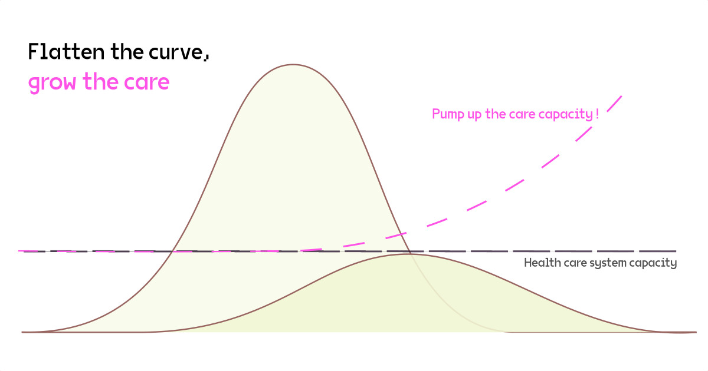

Intervju za Hrvatsku informativnu i novinsku
agenciju povodom završetka 27. Konferencije stranaka UN-ovog Okvirnog
sporazuma o klimatskim promjenama i predavanja održanog na Institutu za
etnografiju i folkloristiku. Intervjuirao Ivo Lučić.
Konferencija o klimatskim promjenama COP27, koja je završila
proteklog vikenda, očekivano je razočarenje jer nije donijela daljnje
korake u napuštanju fosilnih goriva, a ozbiljnog napretka nema dok se
fokus ne premjesti s tržišta na pravednu raspodjelu.
To je jedan od osnovnih naglasaka iz razgovora Hine s Tomislavom
Medakom, istraživačem s Multimedijalnog instituta u Zagrebu, koji je
doktorirao na temi o tehnopolitici i planetarnoj ekološkoj krizi na
Sveučilištu u Coventryju u Engleskoj. Medak je ovih dana održao
predavanje na Institutu za etnologiju i folkloristiku u Zagrebu, koje
je, zajedno s Konferencijom COP27, bilo povod za razgovor o stanju
klimatske krize i ekološke tranzicije u svijetu.
Ograničenje globalnog zagrijavanja na 1.5°C više nije
realno
Konferencija stranaka potpisnica UN-ovog Okvirnog sporazuma o
klimatskim promjenama završila je očekivano neuspjehom. Nakon što su se
zemlje potpisnice u Glasgowu prošle godine obavezale na kakavo-takavo
postupno napuštanje ugljena, u Šarm el-Šeiku nije se dogodio daljnji
kokretan iskorak u napuštanju fosilnih goriva, precizira on. To je bilo
nužno upravo u godini energetske krize, kada se niz zemalja vratio
pojačanom korištenju ugljena. Prema Medaku, „Hrvatska je mogla značajno
uštedjeti u trenutnoj energetskoj krizi da nije prespavala tranziciju na
energiju sunca proteklih 20 godina“.
Medak podsjeća da su izvješća uoči konferencije jasno isticala da
cilj ograničavanja globalnog zagrijavanja od 1.5°C iznad
predindustrijskog prosjeka više realno nije ostvariv. Ostalo
nam je devet godina ugljičnog budžeta kako bismo imali barem
polovične izglede da se globalno zagrijavanje ograniči na 1.5°C. Ta
granica će se izvjesno probiti, no nužno je spriječiti svako daljnje
zagrijavanje.
Potrebne su široke sistemske promjene da bismo drastično smanjili
emisije stakleničkih plinova. U suprotnom, do 2070. trećina čovječanstva
morat će migrirati zbog
nepodnošljivih klimatskih uvjeta.
Medak relativni uspjeh sastanka u Šarm el-Šeiku ipak vidi u
pokretanju fonda za štete i gubitke i podsjeća na velike štete od
ovoljetnih poplava koje su u Pakistanu pogodile 33 milijuna ljudi i
uništile 300.000 domova te u Nigeriji, Nigeru i Čadu izmjestile 1.5
milijun ljudi i uništile 500.000 hektara obradive zemlje. Prema
znanstvenicima, ovakve poplave postale su osamdeset puta izglednije zbog
klimatskih promjena.
Usluge ekosistema dva do tri puta veće od globalne
ekonomije
Na pitanje što ključno određuje odnos prema okolišu u društvima iz
kojih dolaze dominantni pregovarači na klimatskoj konferenciji, Medak
kaže da je to globalna kapitalistička ekonomija. Jedna od važnih
karakteristika kapitalizma je prostorno razdvajanje mjesta proizvodnje i
mjesta potrošnje, što uzrokuje iscrpljene prirodnih resursa ne jednoj
lokaciji, a stvara teško oprabiv otpad i zagađenje na drugoj
lokaciji.
Pri tome, doprinosi ekosistema i štete koje im nanosi industrijski
kapitalizam nisu nigdje uključeni u troškove proizvodnje, ističe Medak i
upućuje na podatke istraživačkog tima ekološkog
ekonomista Roberta Constanze. Oni su 1997. izračunali da su
planetarne usluge ekosistema poput stabilnosti klime, oprašivanja,
kolanja hranjivih tvari i vode te proizvodnje hrane tada vrijedile
između 16 i 54 bilijuna USD, dok je tadašnji globalni BDP iznosio 18
bilijuna USD.
Prema recentnijim izračunima, npr. World
Wildlife Funda, vrijednost tih usluga ekosistema iznosi između
125-140 bilijuna USD, a vrijednost globalne ekonomije oko 85 bilijuna
USD.
Istodobno, prema UN-u
i Svjetskoj organizaciji rada, vrijednost neplaćenog rada društvene
reprodukcije – kućanskih poslova i skrbi koji su uglavnom na grbači žena
– vrijedan je daljnjih 10-40 posto globalne ekonomije.
Kada bi ekonomski sustav integrirao tako izračunate troškove, on bi
postao neprepoznatljivo drugačiji sustav – usmjeren na održanje
ekosistema i društvenu skrb, kaže Tomislav Medak.
Zamjena tehnologija nije dovoljno brza
Medak ističe da postojeći ekonomski sustav prešutno pretpostavlja da
će oceani i kopneni biomi nastaviti iz godine u godinu apsorbirati više
od 50 posto emisija stakleničkih plinova. No, kaže, jednom će doći do
zasićenja tih ugljičnih ponora i staklenički plinovi će se još brže
koncentrirati u atmosferi, ubrzavajući porast temperature. Većina
čovječanstva danas živi u rasponu prosječne temperature od 11-15°C, a
bez značajnog smanjivanja emisija do 2070. prosječna osoba će živjeti u
temperaturama većim za 7.5°C od predindustrijskog razdoblja.
Od početka industrijske primjene fosilnih goriva oko 1800. do 2020.
rast primarne potrošnje energije (s 5.650 na 175.000 TWh), eksploatacije
materijalnih resursa (s cca. 5 na cca. 100 mlijardi tona) i atmosferske
koncentracije stakleničkih plinova (s 280 na 414 čestica/milijun) usko
su povezani s rastom ekonomske aktivnosti. Međutim, nema beskonačnog
rasta na planetu na kojem je ekosistemima za regeneriranje potrebno
mnogo više vremena nego što to sve brža i sve intenzivnija potrošnja
materijalnih resursa i energije dopuštaju, kaže Medak.
Industrijsko-kapitalistički društveni metabolizam koji je građen
protekla dva stoljeća treba restrukturirati u nekoliko kratkih
desetljeća. Obećanja vlada još od Sporazuma u Kyotu sredinom 1990-ih
zasnivaju se primarno na zamjeni tehnologija uz pomoć tržišta. Međutim,
ta zamjena tehnologija nije dovoljno brza i globalne emisije nastavljaju
rasti, iako nešto sporije.
Obnovljivi izvori energije jedva da prate rast potrebe za energijom.
Stoga namjesto da imamo zamjenu fosilnih goriva obnovljivom energijom,
imamo nadodavanje čiste energije na prljavu energiju, kaže Medak i
nastavlja: Da bismo dosegli ciljeve ugljične neutralnosti potreban je
godišnji pad emisija kakav smo doživjeli na početku pandemije COVID-19.
Zamjena tehnologija to ne može ostvariti i stoga se moramo suočiti s
onime što traže
znanstvenici, a to su “brze i dubokosežne promjene bez presedana u
svim aspektima društva”. Potrebno je transformirati ekonomiju i društvo,
a to je donositeljima odluka teže no zamjena prljavih tehnologija, kaže
Medak i dodaje da je to samozavaravanje.
Zelena tranzicija i pravda
Po Medaku, zelenu tranziciju treba pomaknuti s isključivog fokusa na
tehnologije i tržišta na pitanja transformacije ekonomije i pravedne
preraspodjele. Taj pomak, međutim, ne može nastati pregovorima među
državama, nego samo antagonističkim djelovanjem društvenih skupina
pogođenih ekološkom krizom, znanstvene zajednice i civilnodruštvenih
aktera.
Ekološka kriza je iz društvenog gledišta primarno pitanje
distributivne pravde – tko gubi i tko dobiva u klimatskoj krizi i
odgovorima na nju. Nejednakost u tome koliko tko emitira stakleničkih
plinova usko je povezana s ekonomskom nejednakošću: 10 posto najvećih
emitera proizvodi oko 45 posto, a najnižih 50 posto emitera proizvodi 13
posto globalnih emisija. Stoga treba transformirati ekonomske uvjete
nejednakosti i velikih ekoloških otisaka.
Ekonomije nejednakosti zasnovane na fosilnim gorivima i sve većoj
ekstrakciji prirodnih resursa treba zamijeniti ekonomijama koje su
usmjerene prema pravednoj raspodjeli dobara, skrbi za sve i oporavku
ekosistema. U toj transformaciji svrha i strukture ekonomije bitnije će
nam biti tehnologije koje štede resurse poput pasivne gradnje ili potiču
obnavljanje uzajamne povezanosti društava i ekosistema poput
agroekologije od onih koje pretpostavljaju sve veću potrošnju
materijalnih resursa i energije, čime često nepovratno narušavaju
ekosustave o kojima društva u krajnjoj mjeri ovise, zaključuje
Medak.
Intervju o kapitalizmu i invaliditetu koji je vodio Filip
Drača za H-alter.
Objavljeno 8. januara 2021.
Kapitalistički način proizvodnje uveo je svoju historijski
specifičnu formu rada koja nije postojala prije njega. Radna snaga
postala je predmetom razmjene na svojem vlastitom tržištu, roba poput
svake druge. Apologeti kapitalizma često ističu da je kapitalizam u
nekoj idealiziranoj formi na strani potrošača; prodavači se naprosto
pokoravaju onome što mušterija želi, mušerija je jedini neovisni član u
ovom odnosu. Prodavač posjeduje samo neke specifične robe koje ljudi
možda žele a možda i ne žele, dok mušterija posjeduje novac - unverzalnu
robu koju svi žele. Mušterija je kralj.
Međutim, ono što se ne ističe je da ove zakonitosti vrijede i na
tržištu rada; na njemu je radnik prodavač radne snage, dok je kapitalist
mušterija. Ako svaka mušterija želi platiti što manje za što
kvalitetniju robu, ako je svaki prodavač time primoran dati što bolju
robu što jeftinije, tada to znači da na tržištu rada premoć ima
kapitalist; a on naravno želi iscjediti što više rada može iz radnika i
platiti za to što manje.
Kapitalizam je karakteriziran time što jedna klasa privatno
posjeduje sve materijalne uvjete rada u nekom društvu, ono što nazivamo
sredstvima za proizvodnju, što znači da u takvom načinu proizvodnje svi
oni koji ne posjeduju nikakva sredstva subzistencije mogu ta sredstva
steći jedino dopuštenjem vladajuće klase; nije bitno želi li netko
raditi ili ne, radi se samo ako postoji osoba koja je voljna kupiti
radnu snagu. A toj osobi nije na umu prvenstveno to da radnik ima od
čega preživjeti, već to može li radnik proizvesti višak
vrijednosti.
Ovo dovodi do društva u kojem su ljudska tijela i umovi cijenjeni
prema njihovoj sposobnosti da funkcioniraju isto kao i strojevi koje
kapitalisti posjeduju; tijela koja su sposobna neprekidno i neumorno
raditi veći dio dana i umovi koji su obdareni matematičko-logičkom
formom inteligencije postaju vrednovani iznad svih ostalih zbog njihove
sposobnosti da proizvedu što veći višak vrijednosti za kapitalističku
klasu.
Ovakvo nas društveno stanje dovodi do invaliditeta. Invaliditet
se još uvijek uglavnom smatra prirodnom nesrećom zato što se
kapitalistički režim rada koji postavlja produktivnost iznad svega
uglavnom ne dovodi u pitanje. Nasuprot tome, invaliditet je nedavno
nastala društveno uvjetovana kategorija koja pretpostavlja jednu
specifičnu organizaciju proizvodnje koja nije uvijek postojala. U
predkapitalističkim društvima rad nije bio centralno mjesto integracije
u društvo, i ljudi koji su manje sposobni raditi nisu bili isključeni iz
društva na isti način kao i sada.
Tomislav Medakčlan je Multimedijanog instituta
i doktorand pri Centru za postdigitalne kulture Sveučilišta u
Coventryju. U sklopu svojeg istraživačkog rada područje interesa su mu
tehnologija, svjetska ekološka kriza i postkapitalistička tranzicija.
Također je osoba s invaliditetom. S Tomislavom Medakom porazgovarali smo
o odnosu kapitalistčkog načina proizvodnje i invaliditeta; kako
kapitalizam generira takvo stanje svojom temeljnom strukturom i kako se
sistematski odnosi prema tim ljudima, te koji su mogući horizonti
nadilaženja ovako postavljenih društvenih odnosa.
Danas je relativno nekontroverzno tvrditi da su rasni ili
nacionalni identiteti ili pak rodne uloge socijalni konstrukti, a ne
biološke činjenice – barem u usporedbi s invaliditetom. Invaliditet se i
dalje promatra kao prirodna tragedija s kojom se individua jednostavno
mora nositi, uz eventualnu podršku društva. Ne može se često čuti da
netko invaliditet naziva društveno proizvedenom kondicijom koja s
tjelesnom ili mentalnom konstitucijom nema direktnu vezu. Možeš li nam
reći nešto o tome u kakvom društvu neka tijela ili umovi dobivaju oznaku
invaliditeta? Ako je invaliditet društveno uvjetovano stanje, koji su
temeljni društveni odnosi koji ga generiraju?
Ne postoji jedinstvena definicija invaliditeta. UN-ova konvencija o
pravima osoba s invaliditetom1 razlikuje trajna
tjelesna, duševna, kognitivna i senzorna oštećenja od društvenih
prepreka koje u kombinaciji s tim oštećenjima limitiraju sudjelovanje
osoba s invaliditetom u različitim aspektima svakodnevnog života. Naš
zakon2 polazi od nešto suženije definicije
jer ne spominje prepreke, nego samo ograničenu sposobnost izvršavanja
uobičajenih zadataka u svakodnevnom životu koja proizlazi iz
zdravstvenih oštećenja. Pa iako u praksi nije kontroverzno da društveni
uvjeti često određuju živote osoba s invaliditetom u većoj mjeri no
njihove zdravstvene poteškoće, društvena dimenzija invaliditeta i trajna
marginalizacija gledaju se izolirano od opće strukture ekonomske i
socijalne dominacije u društvu. Međutim, društvena dimenzija nisu samo
neadekvatna socijalna prava, barijere ili nevidljivost osoba s
invaliditetom, nego i marginalna pozicija osoba s invaliditetom u
društvima u kojima tržište rada i radna sposobnost imaju centralnu
integrativnu ulogu.
Da bismo jasnije vidjeli marginaliziranost u tom strukturnom
registru, korisno je izdvojiti neke statističke podatke za Hrvatsku.
Prema Registru osoba s invaliditetom invaliditet ima preko
510.000 osoba ili nekih 12.4% ukupnog stanovništva3.
Muškarci su sa 60% zastupljeniji, prvenstveno zbog 58.000 branitelja s
invaliditetom i većeg sudjelovanja u fizički zahtjevnijim i rizičnijim
zanimanjima. Rat i rad veliki su uzročnici invaliditeta. Pogledajmo
stoga podatke vezane uz rad. Preko 300.000 ljudi ostvaruje pravo na
invalidsku mirovinu ili naknadu za ozljedu na radu.4
Nekih 220.000 osoba s invaliditetom je u radnoj dobi, ali prema podacima
Akademske mreže europskih stručnjaka za invaliditet5
svega ih je trećina zaposlena. Prema nekim drugim istraživanjima6 ta brojka je i niža. Hrvatski zavod
za zapošljavanje izvještava da je tijekom 2019. udio nezaposlenih s
invaliditetom na burzi rada bio 4.5%, a među onima koji su našli
zaposlenje svega 1.9%.7 Od toga se većina zapošavlja u
pomoćnim zanimanjima, jer dobar dio djece s poteškoćama nailazi na
značajne prepreke u obrazovnom sustav, pa stoga čak 66% osoba s
invaliditetom ne završi više od osnovne škole. Istodobno, skoro 40%
osoba s invaliditetom izloženo je povećanom riziku od siromaštva i
socijalne isključenosti, gotovo dvostruko češće od ostatka populacije.
Socijalna ugroženost prelijeva se i na njihove obitelji, jer njihovo
zdravstveno stanje često iziskuje dodatni rad skrbi koji socijalni
sustav ni izdaleka ne pruža u adekvatnoj mjeri.
Ovi podaci ukazuju da tržište rada stvara invaliditet, ali istodobno
sustavno isključuje invaliditet. Proljetos to postalo zorno razvidno s
odlukom vlade da u pandemijske potpore za očuvanje radnih mjesta
preusmjeri 450 milijuna kuna koje su poduzeća plaćala HZZ-u kao penale
jer ne zapošljavaju osobe s invaliditetom.8
Svega 13% poslodavaca je ispunilo kvotu od 3% zaposlenika s
invaliditetom, a čak 63% se odlučilo radije plaćati penale nego uzeti
poticajne mjere da zaposle barem jednu osobu s invaliditetom. Stoga je
HZZ prethodnih godina nakupio preko 600 milijuna kuna od tih penala koje
nije uspijevao potrošiti na poticaje za zapošljavanje osoba s
invaliditetom. Zašto konkurentsko tržište rada isključuje invaliditet?
Razlog tome je jednostavan: kada radnik s invaliditetom ima jednaku
stručnost kao radnik bez invaliditeta, on za poslodavca donosi dodatni
rizik prilagodbe radnog procesa. Primjerice, čak i kada je riječ o radu
za računalom, osoba s tjelesnim oštećenjem možda treba lift, možda ne
može provesti čitavo radno vrijeme sjedeći, možda treba tuđu pomoć. O
bolovanju i drugim, kompleksnijim prilagodbama da ne govorimo. Za
poduzeće koje želi organizirati radni proces što učinkovitije, što
fleksibilnije i sa što manjim troškovima, to donosi neizvjesnost. Premda
u realno postojećim društvenim okolnostima osobe s invaliditetom trebaju
imati zakonski zajamčenu priliku na zaposlenje, tržište rada koje
pretpostavlja prilagodljivost radnika uvijek će ih diskriminirati.
Sredstva koja HZZ nakuplja stoga treba trošiti ne samo na zapošljavanje,
nego i na ostvarivanje uvjeta za autonomni život mimo tržišta rada — na
socijalne potrebe, potrebe samostalnog življenja i bolji ekonomski,
socijalni i profesionalni položaj osoba koje im pružaju skrb.
Međutim, unatoč strukturnoj isključenosti iz tržišta rada osobe s
invaliditetom su pod stalnim pritiskom da se legitimiraju željom za
zaposlenjem. To ne čudi. U društvu u kojem se temeljne potrebe poput
prehrane, stanovanja i razonode zadovoljavaju na tržištu, smatra se
vrijednim, dostojanstvenim i autonomnim onaj život u kojem se radi i
raspolaže plaćom. Nezaposlenost pak predstavlja ekonomsku ovisnost i
egzistencijalni teret za bližnje. Međutim, zaposlenje ostaje nedosežna
ambicija za dobar dio osoba s invaliditetom.
Ta internalizacija imperativa da se moramo zaposliti oblik je
samopodčinjavanja. Nikakva grižnja savjesti ne bi trebala proizlaziti iz
individualne nemogućnosti da se nadiđe sistemska isključenost. Stoga,
kao što sugerira Sunita Taylor, osobe s invaliditetom trebaju
zahtijevati “pravo na nerad”.9 Međutim, trebamo i
okrenuti oštricu. Isključenost osoba s invaliditetom iz tržišta rada i
siromaštvo kojem su izložene imaju disciplinirajuću funkciju u općoj
organizaciji tržišta rada. Svakom radniku koji nije dovoljno
prilagodljiv, koji se ozlijedi ili iz bilo kojeg razloga gubi radnu
sposobnost prijeti socijalna degradacija u kakvoj živi populacija s
invaliditetom. Stoga isključenost osoba s invaliditetom nalaže da
dovedemo u pitanje društvo u kojem centralnu ulogu u integraciji i
autonomiji igra konkurentsko tržište rada, a ne, primjerice, uzajamni i
suradnički odnosi skrbi jednih o drugima o kojima realno ovisi većina
našeg života i koji se najčešće ne odvijaju u sferi kupoprodaje rada i
roba.
Kako priliči nekom socijalno kontingentom položaju,
invaliditet je bio različito definiran u različitim razdobljima u
povijesti kapitalizma. Ukratko, kako je društvena kondicija invaliditeta
nastala, po čemu se današnji položaj osoba s invaliditetom razlikuje od
nekog predmodernog, ako se razlikuje? Kako možemo povezati promjene u
pojmu invaliditeta s prolaznim potrebama tržišta rada?
Paradigme invaliditeta mijenjale su se kroz vrijeme.
Ranokapitalistički odnosi konstituiraju se, između ostalog,
istiskivanjem društvene većine sa života na zemlji u besposlenu armiju
rada u gradovima koja čini bazu za ranu industrijalizaciju. U razdoblju
rane industrijalizacije događa se degradacija životnih uvjeta radništva.
Iako možemo pretpostaviti da život osoba s invaliditetom nije bio lak
prije kapitalizma, u seoskim domaćinstvima one su ipak imale priliku
doprinijeti radom adekvatno svojim mogućnostima. S uspostavom
konkurentskog tržišta rada one su se našle istisnute iz sfere rada,
lišene sredstava za preživljavanje i svedene na teret ionako teško
oskudijevajućoj radničkoj obitelji. O bijednoj uvjetima života, ishrani,
zdravlju i kratkim životima znamo radništva znamo podosta iz
historiografije, književnosti i društvene teorije 19. stoljeća. Međutim,
o bijedi osoba s invaliditetom znamo relativno malo. Pa ipak znamo da su
ubožnice i tamnice već od prije bili načini zbrinjavanja i uklanjanja
osoba s invaliditetom i ostalog suvišnog stanovništva. Invaliditet se
shvaćao kao osobna tragedija s kojom su se osobe morale sam nositi, a
društvo ih je eventualno iz samilosti moglo održati na životu. Nažalost
osobe s invaliditetom su i danas prinuđene na preživljavanje po
zatvorenim institucijama i zatvorima. Postoji kontinuitet između
institucionalizacije i zatvaranja, jer invaliditet rezultira
segregacijom, siromaštvom i nezaposlenošću koji su pak blisko povezani s
ponašanjem koje se smatra delinkventnim — i stoga osobe s invaliditetom
često završavaju u zatvorima i kao žrtve policijskog nasilja.10 U SAD-u preko trećine zatvorske
populacije11 i između trećine i polovine žrtava
policijskog nasilja12 imaju invaliditet, najčešće duševne
i kognitivne poteškoće.
U 19. stoljeću paralelni procesi konsolidacije kapitalističkih
odnosa, formiranja nacionalnih država usmjerenih na populacijsku
politiku i razvoja znanosti donose nova shvaćanja i pristupe
invaliditetu. U tom kontekstu artikulira se eugenički model u kojem se
kronične bolesti i oštećenja vidi kao prijetnju ukupnom zdravlju nacije
koju mehanizmima selekcije treba ukloniti. Takav selekcijski model
temeljen na društvenoj primjeni darvinizma nije bio usmjeren samo protiv
osoba s invaliditetom, nego i siromašnih, lumpenproletarijata i
radništva koji su se našli bačeni u bijedu uspostavom kapitalističkih
odnosa. Namjesto eugeničkog modela u 20. stoljeću primat preuzima
medicinski model13. Medicinski model rezultat je,
dakako, napredaka u razumijevanju bolesti. Ali do njegovog uspona dolazi
i zbog promjene odnosa spram osoba s invaliditetom zbog ratnih
stradavanja, a s druge strane zbog borbi radništva za socijalna prava.
Medicinski model oštećenje uzima kao nešto što se treba ublažiti i
liječiti, a osobu s invaliditetom smjestiti u adekvatni institucionalni
okvir koji će joj olakšati život i omogućiti se da se pripremi za
zadatke u svakodnevici. Mi smo i danas velikim dijelom u toj paradigmi
invaliditeta, iako se ona uvelike izmijenila. Primjerice, ja sam kao
osoba niskog rasta u 1980-ima bio samovoljno podvrgnut zahvatu
produžavanja potkoljenica metodom vanjskog fiksatora14
koji mi je donio dosta naknadnih komplikacija. Danas medicinska etika ne
bi odobravala takav zahvat, jer se smatra da ne treba prilagođavati
osobu nego okoliš — što nažalost rijetko funkcionira.
Medicinski model nedovoljno sagledava probleme u društvenom kontekstu
i time implicitno reproducira isključenost osoba s invaliditetom. Iz te
kritike medicinskog modela početkom 1970-ih britanski aktivisti za prava
osoba s invaliditetom artikuliraju integrativni, društveni model
invaliditeta.15 Društveni model oštećenja počinje
sagledavati iz rakursa društvenog svijeta fizičkih prepreka, predrasuda,
nevidljivosti, patronizirajuće institucionalizacije i isključenosti iz
sfere rada. Svi ti faktori ograničavaju osobe s invaliditetom da
razvijaju vlastite sposobnosti i vlastite aspiracije. Za društveni model
invaliditet nije primarno određen oštećenjem, nego primarno tim procesom
društveno proizvedene onesposobljenosti, za koji se na engleskom koristi
pojam “dis-ablement”. Društveno-ekonomski model invaliditeta koji ja
zastupam, i kojeg je Marta Russell razvila u svojim ogledima o
invaliditetu i kapitalizmu,16 dio je tog pristupa,
ali logiku isključivanja osoba s invaliditetom vidi u kontinuitetu s
mehanizmima dominacije u kapitalističkom društvu.
Iz tako proširenog razumijevanja invaliditeta u 1970-ima je stasao
pokret osoba s invaliditetom koji je kampanjama, demonstracijama i
direktnim akcijama — uz podršku antirasističkog, antiratnog i radničkog
pokreta — počeo dovoditi u pitanje ekonomske i institucionalne interese
su osobe s invaliditetom osuđivale na trajnu isključenost. Osobe s
invaliditetom zahtijevale su prava, inkluzivne institucije i pravo da
kolektivno definiraju svoje potrebe i samostalan život. Iz tog procesa
političkog subjektiviranja proizašao je i slogan, koji bi ujedno trebalo
čitati i kao političku prijetnju: “Ništa o nama bez nas!”. U 1990-ima
je, međutim, i taj model došao pod kritiku utoliko što je previše
naglašavao negativnu dimenziju isključenosti nauštrb pozitivnog iskustva
invaliditeta. Iz te kritike nastaju radikalni modeli invaliditeta koji
naglašavaju pozitivno identificiranje s invaliditetom, kolektivnu
samo-emancipaciju, intersekcionalnost, kviranje (en. queering)
i kripanje (en. cripping) društva fiksiranog na sposobnost. I
dok su ti modeli prije svega usmjereni na politiku identiteta i kritiku
mehanizama identiteta, dakle politiku priznanja, oni su u značajnoj
mjeri proširili strukturne aspekte teorije društvenog modela
sagledavajući druge oblike društvene dominacije kroz normirajuće učinke
ideologije sposobnosti (en. ableism) i naglašavajući aspekte
kolektivne međuovisnosti, uzajamnosti i rada društvene reprodukcije koji
su podjednako bitni za osobe s invaliditetom i druge društvene
skupine.
Osobe s invaliditetom su u mnogim zemljama disproporcionalno
zastupljene među kronično nezaposlenim substramumom radničke klase, kao
i u institucijama čija je funkcija (između ostalog) nadzor nad tim
‘’suvišnim stanovništvom’’ koje se ne uspijeva integrirati u
kapitalistički način proizvodnje i distribucije dobara, poput zatvora
ili psihijatrijskih ustanova. Na koji način kapitalizam generira
nezaposlenost i kako mu može biti korisno da ona bude u principu
neiskorjenjiva? Jesu li osobe s invaliditetom zauvijek strukturalno
pogurane u nezaposlenost (i navedene oblike institucionalizacije u koje
nezaposlenost može odvesti) ili je moguće integrirati ih u sistem
nadničkog rada?
Okolnosti koje su opisane u statističkim podacima koje sam naveo
razlikuju se od države do države. Pitanje je, dakako, je li to samo
razlika u stupnju ili naravi. Podaci za skandinavske zemlje su ipak
znatno bolji, iako i dalje ukazuju na značajnu radnu i socijalnu
isključenost osoba s invaliditetom u usporedbi s ostatkom stanovništva.
U tom pogledu u bogatijim kapitalističkim društvima mehanizmi
konkurentskog tržišta rada mogu biti dovoljno relaksirani da njihovo
“čelično pravilo” nastupa tek u krajnjoj instanci — u instanci ekonomske
stagnacije i krize. Dapače, u vremenima povećane potražnje za radnom
snagom, zapošljavanje radno neaktivnih skupina poput osoba s
invaliditetom može smanjiti rastuću cijenu rada, pogotovo ako postoje
poticajne mjere za zapošljavanje. Ako postoji adekvatna zakonska
regulativa i ako postoje mjere koje smanjuju troškove poslodavcu, u
uvjetima ekonomske ekspanzije moguća je značajnija integracija. Ali kad
dođe ekonomska kriza, opet dolazi do otpošljavanja rezervne armije rada.
Marginalna pozicija na tržištu rada za osobe s invaliditetom znači da se
stvorene prilike za rad vrlo brzo zatvaraju. Međutim, u ekonomski
razvijenijim kapitalističkim društvima posljednjih desetljeća oporavci
od kriza nisu tendirali prema punom reaktiviranju otpuštenog radništva i
ponovnom rastu nadnica, nego prema preseljenju radnih mjesta u
jugoistočnu Aziju i automatizaciji proizvodnje. Trajni nestanak tih
radnih mjesta je rezultirao time da mnogi moraju raditi previše da bi
spojili kraj s krajem, dok drugi uopće ne uspijevaju naći posla pa
napuštaju tržište rada.17
Iz kritičkog rakursa invaliditeta na te procese moglo bi se
predlagati nekoliko mogućih “zakrpa”. Prvo, iz perspektive “prava na
nerad”, trebalo bi zakonski skratiti radni tjedan, primjerice na četiri
radna dana, što bi imalo pozitivan učinak na dostupnost i cijenu rada,
povećanje slobodnog vremena i ukupnu dobrobit. Drugo, iz perspektive
radne nesigurnosti, trebalo bi osigurati socijalnu sigurnost i zajamčeni
dohodak za masu prekarnih radnika uključujući i one koji obavljaju rad
skrbi. Treće, iz perspektive neadekvatnosti sustava skrbi, trebalo bi
socijalizirati i proširiti usluge u zajednici kao što su skrb o djeci,
starijima i osobama s invaliditetom, stanovanje, obrazovanje i
zdravstvo. Naravno, kao i svaka situacija “civiliziranja” kapitalizma,
pitanje je postoje li društvene snage koji takve reformske prijedloge
mogu iznijeti. U svakom slučaju, konstelacija svjetskog kapitalističkog
sistema nije tome naklonjena.
A proposodnosa između invaliditeta i Holokausta, ne
ističe se jako često da je Holokaust započeo upravo istrebljivanjem
ljudi koji nisu bili sposobni proizvoditi višak vrijednosti, niti su
osobe s invaliditetom ikad bile prepoznate kao žrtve Holokausta jednako
rezolutno kao razne etničke skupine koje su nacisti progonili. Može li
se govoriti o ikakvoj centralnosti iskorjenjivanja invaliditeta u
Holokaustu? Jesu li ideološki razlozi ubijanja osoba s invaliditetom
usporedivi s razlozima iz koje su ostale žrtve Holokausta
proganjane?
Pretpostavljam da je pitanje motivirano nedavnim slučajem Hrvatskog
povijesnog muzeja koji je Međunarodni dan osoba s invaliditetom na
društvenim mrežama obilježio propagandnim fotografijama Ministarstva
obrane Nezavisne države Hrvatske,18 na koji smo reagirali
Sanja Horvatinčić i ja. Ministarstvu kulture te uredima
Pravobraniteljica za osobe s invaliditetom i za ljudska prava poslali
smo dopis sa zahtjevom da se ispita postupanje muzeja koji sadrži
elemente kaznenog djela umanjivanja zločina protiv čovječnosti. Za
razliku od pravobraniteljstava, Ministarstvo je odmahnulo na naš zahtjev
pravdajući Muzej time da je organizirao izložbu o stradanju Židova iz
Hrvatske u Holokaustu. Kako to uobičajeno biva kad se potegne pitanje
rasističkih zločina u NDH-ziji, suočavanje sa zločinima nad Židovima u
Hrvatskoj ima dnevnopolitičku svrhu da bi se prešutjelo stradanje
drugih, primarno Srba. U ovom slučaju Ministarstvo je posve prešutjelo
stradanje osoba s invaliditetom na koje smo se mi fokusirali u našem
dopisu.
U dopisu smo ukazali na povijest stradanja osoba s invaliditetom pod
zakonima rasne čistoće u Trećem Reichu, koji su s jedne strane bili
nastavak eugeničkih i socijaldarvinističkih tendencija, a s druge
motivirani politikama štednje u ratnoj ekonomiji. S jedne strane “životi
nedostojni življenja”, a s druge “beskorisna gladna usta”. Od 1933.
nacistički režim započinje s prisilnim institucionalizacijama i
sterilizacijama osoba s invaliditetom i raznih “asocijalnih” elemenata,
od 1938. s eutanazijom djece s poteškoćama u razvoju, a od 1939. u
sklopu Akcije T-4 s masovnim istrebljenjem osoba s duševnim i drugim
poteškoćama u manjim plinskim komorama.19
Iako je taj program zbog protesta javnosti koji je pokrenula katolička
crkva obustavljen sredinom 1941., računa se da je u Njemačkoj ubijeno
nekih 80.000, a sveukupno pod upravom Trećeg rajha između 200.000 i
500.000 osoba s invaliditetom. Zakon o sprječavanju potomstva s
nasljednim bolestima i Zakon protiv opasnih kriminalaca iz 1933.
postavili su temelje za Nuremberške rasne zakone iz 1935., a plinske
komore su preseljene na teritorij Poljske gdje su našle primjenu u
masovnom istrebljenju Židova, Roma, Slavena i protivnika fašizma.
Premda je ideologija rasne čistoće zajednička nit u stradanju
različitih skupina, pa tako i osoba s invaliditetom, neki ideološki
elementi su različiti. Primjerice, dok se u Židovima pripisivala
iracionalna moć stvaranja svjetske zavjere fiktivnog kapitala protiv
njemačkog kapitalizma, osobe s invaliditetom se socijaldarvinistički
smatralo bezvrijednim i neproduktivnim parazitima u vlastitoj ekonomiji.
Iako se rasizmi ne mogu svesti na ekonomske odnose, oni igraju značajnu
ulogu jer rasizam legitimira dominaciju. Simpatija mnogih kapitalista
prema nacizmu počivala je na simpatijama prema eugenici i socijalnom
darvinizmu kao spontanoj ideologiji koja je prikrivala da su bolesti,
bijeda i asocijalno ponašanje u velikoj mjeri ishod kapitalističkih
društvenih odnosa koje su oni stvarali, ali svakako i na činjenici da je
Hitler krenuo demontirati vajmarsku socijalnu državu.
Karl Marx je u Prilogu jevrejskom pitanju kritizirao
legalistička rješenja raznih oblika persekucije ističući da uvođenja
raznih zakona nisu prava negacija stanja u kojemu je neka manjina
progonjena – zato što to stanje naprosto pretpostavljaju i ne ulaze u
korijen takvih fenomena, što je lekcija od koje i danas imamo mnogo
učiti. Danas u mnogim zemljama postoje zakoni protiv diskriminacije nad
osobama s invaliditetom i druga pravna rješenja isključivanja tih ljudi
iz ostatka društva, no koliko su učinkoviti? Što im se može prigovoriti?
Koja su ograničenja borbi za prava osoba s invaliditetom?
Antidiskriminacijski zakoni naravno imaju ograničen doseg. U slučaju
osoba s invaliditetom, ne samo da ne uspijevaju imenovati strukturne
razloge diskriminacije, nego se već na prvom i jednostavnom — uklanjanju
barijera u fizičkom prostoru, institucijama i uslugama — susreću s
problemom razumnog troška. Da ne govorimo o većim zahvatima u sustav
skrbi koji bi trebali umanjiti posljedice isključenosti. Sve promjene su
malene i teškom bitkom izborene. Kao što pravobraniteljica za osobe s
invaliditetom Anka Slonjšak ističe20, mi se još uvijek
borimo s time da mjesto osoba s invaliditetom nije u institucijama, da
imaju pravo na osobnu asistenciju u samostalnom življenju i da imaju
pravo na inkluzivni dodatak. Zakoni problematiku artikuliraju iz
perspektive potreba i prava, no to ne znači da postoje strukturni uvjeti
i politička snaga da se naprave promjene — kod nas se jedino invaliditet
branitelja uopće razmatra u razmjerima stvarnih potreba, ali upravo zato
se prava ne legitimiraju iz potrebe nego iz žrtve za domovinu.
Međutim, treba imati na umu i da strukturne uzroke manjine ne mogu
riješiti same. Zakoni ipak strukturiraju prostor za djelovanje unutar
interesno heterogenog i klasnog podijeljenog koji liberalna
kapitalistička država integrira u cjelinu. Bitno je stoga ne zanemariti
ono što je moguće postići unutar postojećih društvenih odnosa taktičkim
djelovanjem kroz zakone i institucije. To definira strateški prostor
društvenih borbi. Međutim, zbog povijesnih razloga, kao što je podjela
organizacija osoba s invaliditetom prema različitim oblicima oštećenja,
kolektivna moć djelovanja zajednice osoba s invaliditetom je
fragmentirana. I dok se udruge mogu time možda bolje usmjeriti na
specifične potrebe svog članstva, ukupno je politički snaga osoba s
invaliditetom gotovo pa nepostojeća. Udruge su dijelom integrirane u
sustav, ali na njegovoj margini. Jedina osoba s invaliditetom koja se
pojavljuje u političkom prostoru je pravobraniteljica, i ona nastupa
snažno, no tu sve staje. Stoga je politiziranje osoba s invaliditetom,
kao i osoba koje im pružaju skrb, veći problem od ograničenosti
zakonskih reformi. U tom kontekstu, sindikalna inicijativa Osobni
asistenti zajedno21 predstavlja dobar korak u pravom
smjeru.
Postoji li opća korist u borbi za bolji društveni status
osoba za invaliditetom? Zamislimo “zdravog” čovjeka iz radničke klase
koji nema osobe s invaliditetom unutar obitelji i kruga prijatelja,
općenito nema nikakvu očiglednu korist od takvih borbi. Postoje li
načini na koje bi se njegovo vlastito stanje popravilo, i samim time,
postoji li njegov vlastit interes u tome?
Gledano iz perspektive socijalne zaštite, korist za “zdravu”
populaciju od borbe za bolji društveni status osoba s invaliditetom je
relativno jasna. Mnogi se s invaliditetom ne rađaju nego ga stječu.
Invaliditet je često rezultat neadekvatnih radnih uvjeta, oskudice i
nesreća koje rezultiraju trajnim oštećenjima. On se može dogoditi
svakome. Nitko se u toj situaciji ne bi trebao naći prepušten
invaliditetu kao osobnoj tragediji.
Nadalje, kako starimo i gubimo sposobnost, svi ovisimo o sustavima
pomoći i skrbi — bili oni u samostalnom življenju ili u institucijama —
o kojima ovise i osobe s invaliditetom. Bez boljeg sustava skrbi,
mnogima koji su danas u naponu snage starost će biti teška.
Gledano iz perspektive rada, kao što je svojedobno peontirao David
Graeber22, većina rada koji radnička klasa
obavlja je rad na drugim ljudima. Takav rad skrbi pokazao se
“esencijalnim” u pandemiji, međutim upravo oni koji pružaju skrb mogu
očekivati ponajmanje socijalne sigurnosti i skrbi. Borba za bolji
društveni status osoba s invaliditetom trebala bi rezultirati boljim
društvenim statusom tog nemalog dijela radničke klase.
Naposljetku, ako oni koji duže ili trajno ne mogu sudjelovati u
tržištu rada osuđeni na život u bijedi, onda to znači da će u slučaju
pogoršanja radnih uvjeta, bolesti ili ozlijede radnik morati nastaviti
raditi bez obzira na to hoće li to rezultirati trajnom
nesposobnošću.
Kratki
intervju za Novosti o ukidanju Trumpovih profila na Twitteru i
drugim društvenim mrežama. Intevjuirala Mašenjka Bačić. Objavljen pod
naslovom “Društvene mreže treba regulirati”.
S jedne strane nalaze se oni koji smatraju da su društvene
platforme zakasnile u ukidanju Trumpovih profila te da su mu podilazile
zbog toga jer je predsjednik, a s druge oni koji smatraju da se time
ugrožava sloboda govora. Na kojoj ste Vi poziciji?
Iz Twitterovog
objašnjenja trajno ukidanje Turmpovog privatnog profila izgleda
upitno. Mogao nastaviti brisati tweetove ili stavljati upozorenja uz
njih. To je u prethodnim situacijama rezultiralo znatno smanjenom
diseminacijom takvih poruka. Trump je dosada imao mnoštvo objava koje su
implicite zazivali nasilje. Zbog otvorenih laži, mizoginije i rasizma
mogao je biti benan i ranije, ali Twitter javne
figure izuzima od nekih pravila koja vrijede za ostale.
To benanje jest, doduše, simboličko dovršenje političkog samoubojstva
kojeg je Trump sam počinio. Ono je došlo u času kada je svima jasno da
Trump izgubio poluge vladanja i da više ne zapovijeda niti najbližim
suradnicima, što je u političkim sustavima situacija vakuuma vlasti. Šok
6.1. za političku javnosti u SAD-u bio je golem: dogodila se
transgresija koja je ugrozila proces prijenosa vlasti, iako realno bez
potencijala za državni udar – upravo jer je glavni nositelj vlasti u tom
trenutku izgubio sve poluge vlasti. Tim potezom Twitter je nešto i
riskirao, nepovjerenje kod zagovornika slobodnog govora pa čak i
zagovornika uvjetovanog slobodnog govora poput mene, ali očigledno je
moment i promjena općeg raspoloženja prelomila stvar.
Koliko su društvene mreže kao alat zaslužne za stvaranje
atmosfere koja je dovela do upada rulje u Kongres te bi li bilo razlike
da su društvene mreže puno ranije ukinule Trumpov profil?
Bez društvenih mreža Alt-Right, QAnon, Proud Boys ili Boogaloo Bois
svakako ne bi dobili prodor u mainstream. Društvene mreže važan su alat
vidljivosti i koordinacije pokreta, pogotovo u disperznom političkom
prostoru, pa tako i na desnici. Treba prepoznati da je okupljanje na
Capitolu bila prilika, možda i zadnja, da ti pokreti i njegovi akteri
osiguraju svoju političku i medijsku relevantnost i nakon Trumpovog
odlaska. Treba i njih vidjeti kao političke aktere.
Međutim, društvene mreže i drugi kanali masovne diseminacije poput
WhatsAppa svakako mogu biti informacijska spirala koje ljude gurne
u spremnost i situacije nasilja, pogotovo kad u pozadini djeluju
strukturne forme ekonomskog, etničkog, patrijahalnog, rasističkog
naislja. Stoga su se društvene mreže našle pritisnute da reguliraju
širenje dezinformacija, manipulacija i poziva na nasilje, te da
informacije kontekstualiziraju i učine kompleksnijima, što je tek
djelomično uspješno dijelom zbog nedovoljnog ulaganja u takvu provjeru,
a i dijelom zbog toga što više reklama mogu prikazati kad je informacija
kraća i fragmentiranije pa smo prisiljeni više skrolati.
Ukidanje Trumpovog računa na Twitteru, Facebooku i drugim
platformama otvorilo je još jedno pitanje – moć društvenih mreža kao
javnog prostora kojeg za razliku od tradicionalnih medija reguliraju
njihovi vlasnici čiji je cilj isključivo profit. Postoji li potreba za
zakonskom regulacijom društvenih mreža te je li ona moguća?
Bitno je istaknuti da nije samo Trump taj nego i čitava politička
scena koji koriste Twitter kako bi izbjegli medijsku trijažu. Pobuda i
prilika da se bude vlastiti medij i medijima nameće diskusija nisu u
naravi drugačije od pobuda i prilika alt-right ekipe. Društvene mreže
naravno imaju monetarnu korist od masovnosti, Twitter od toga da ga se
vidi kao pozornicu “službenog političkog govora”. Uostalom, masa nas
korisnika društvenih mreža djelujemo kao da smo svoj medij. Time su
mediji izgubili svoj monopol na oblikovanje javnog govora, premda ni
tradicionalni i novi komercijalni mediji nisu u ekonomskom pogledu
drugačiji. I društvene mreže i komercijalni mediji se bore za iste
reklamne pare, za istu ekonomiju pažnje, za isti clickstream.
Privatna poduzeća nisu nužno politički neutralna. Dapače, čitave
frakcije kapitala direktno ovise o vlastitoj političkoj orijentaciji. U
SAD-u su te tendencije nešto jasnije, jer para ima veću ulogu no u
drugim demokratskim sustavima. Zoran primjer su proizvođači oružja ili
naftna industrija i Republikanci. Ne iznenađuje da nakon četiri godine
Trumpove vladavine big tech, koji se uglavnom nalazi na suprotnoj strani
političkog spektra u SAD-u, koristi pravila koja je morao izraditi pod
pritiskom javnosti i pravne odgovornosti da bi ga konačno ušutkao.
Opredijeljenost big techa, uostalom, vidi se iz činjenice da je Twitter
na isti dan kad i Trumpov, suspendirao i profil Sciencea Huba, najvećeg
piratskog repozitorija znanstvenih članaka o kojem praktički ovisi
globalna dostupnost znanosti izvan bogatih institucija globalnog
sjevera.
Twitter i FB su platforme javne komunikacije (iako dijelom zatvoreni
sustavi), pa je pitanje njihove infrastrukturne uloge spram javne sfere
i prava javnog govora, no kako su to privatne firme same postavljaju
pravila komunikacije unutar zakonskih dopuštenja. Djelomično je to
problem monopola. Međutim, u mrežnim komunikacijama je gotovo neizbježan
zbog tzv. mrežnog učinka: komunikacijska mreža je tim korisnija za
svakog njenog sudionika što je više sudionika komunikacije. A i a
oligopol temeljna karakteristika razvijenog kapitalizma. Može se reći da
su FB i Twitter konkurenti u istom tržištu, pa su ipak obje mreže benale
Trumpa. Potencijalno problematičnije od benanja Trumpa je benanje
Parlera na Appleovim i Googleovim aplikacijskih platformama, jer bi
Parler trebao regulirati pravosudni sustav.
Rješenje je kompleksno: regulacijom prisiliti društvene mreže da
znatno više ulažu u provjeravanje, kontekstualiziranje i obogaćivanje
informacija, spriječiti ih u izbjegavanju poreza, od tih sredstava
znatno više ulagati učenje za snalaženje u informacijskoj kompleksnosti
te pluralizaciju i dekomercijalizacija medijskog prostora. Naposlijetku,
možda te monopole možda i razbiti ili pretvoriti u javni servis koji bi
bez pritiska reklama mogao imati i kvalitetnije sučeje i bolje služiti
smislenom informiranju.
This text is a revised version of the talk
delivered at The Workers and Punks’ University May Day School on
“Transition, Austerity and Primitive Accumulation – Left Answers” in
Ljubljana on the 28th of April, 2013. The text has been expanded with
the insights relating particularly to the digital commons activism in
the Balkans region, drawing on the debates in the working sessions at
the Green Academy in Vis in Semptember of 2012.
This text will reflect on some of the issues around digital commons,
primarily free software, from a historical point of view. It will be
looking back at the processes that have shaped the production and access
to digital commons and conceptualizations that were produced in order to
understand their social significance. Concretely, it will focus on four
aspects of the problematic: - economics of digital commons; - continuous
primitive accumulation by means of intellectual property rights; -
possibility of a relative autonomy of cooperative production within the
capitalist mode of production; - possible courses of action for digital
commons activists in the Balkans.
While analyzing the first and the second, it’ll discuss more in
detail issues that relate to free software. However, the debate around
the digital commons – viewed in the context of their emergence over the
last twenty to thirty years with the ascendancy of digital technologies
and the internet – warrants that the concept of digital commons can be
understood very broadly to include a variety of forms of intellectual
production and thus the discussion of free software here touches upon
broader concerns related to digital commons.
As a matter of definition, digital commons are cultural, scientific,
software and educational works that are not restricted in use by
copyright property entitlements – for reasons that they are either not
subject to copyright protection, that the term of protection has
expired, or that their creators have voluntarily made them available
without monetary compensation for sharing and collaborative
peer-production. But given the expansion of copyright and other
intellectual property rights in the same period of thirty years, digital
commons are also in constant danger of future enclosure.
However, as the debate around digital commons revolves around the
antagonisms generated by the application of copyright and intellectual
property rights, it often touches upon three other intensely contested
debates. First, the debate on objects of the material world that through
the development of technologies have become subject to intellectual
property enclosure in the form of patents. Second, the debate around the
monopoly regulation and public access to telecommunication
infrastructures. Third, and probably most frequently, the debate on
illegal access to and sharing of copyrighted works that are often
stigmatized as piracy. Given that the monopoly access to exploitation of
intellectual works, medicines and telecommunication infrastructure
provided by intellectual property rights forms the basis of profits of
the commanding heights of contemporary capitalist enterprise – with
telecommunication, software, media and pharma companies topping the
lists of world’s largest companies – the contestation of these monopoly
entitlements shakes at the strongest pillars of the contemporary
capitalist system and any attempt to think the replacement of
contemporary capitalism has to take them into account. But also given
that the legal practices of commoning and illicit practices of illegal
sharing can have immediate social and developmental equalizing effects,
they provide a recourse within the continuing endurance of real existing
capitalism. This broad problematic thus that has fundamental
implications on both how we envision the anti-capitalist strategy and
everyday autonomy.
But before more is said about the digital commons, three remarks that
shed some light on the discussion of digital commons from the
perspective of technological development and enclosures.
First, and to return the point already made, when debating the
digital comes and their enclosures from a historical point of view, we
cannot leave material resources out of that debate. Simply because the
enclosures in digital commons have over the last two decades gone hand
in hand with the enclosures of some of the essential material resources
for human livelihoods such as healthcare, food production, environmental
engineering, all domains where new enclosures have been made possible by
the advances in digital technologies: e.g. computing technologies used
in genome sequencing or biocomputing. And as the digital technologies
have created conditions for new forms of intellectual production and
generation of material resources, they have also paved the way for their
commodification and increasing levels of control by means of
intellectual property rights. By the late 1990s an offensive was
launched, occasioned by the rise of filesharing networks and the push to
control the copyright in the digital domain, that served as a pretext to
solidify protections over tangible resources such as medicines or crops,
where at that point patents were used to transform e.g. subsistence
agriculture into industrial agriculture producing for global markets or
traditional medicines into pharmaceutical products marketed back to
indigenous communities. These overlapping conflicts over tangible and
intangible resources then prompted allied efforts of free software, open
access in scientific publishing, open education, access2knowledge,
access2medicine and open science proponents to push back that global
offensive.
Secondly, and this gets frequently overlooked by the advocates of the
digital commons such as myself, the rise of digital technologies - while
being emancipatory in many ways - has also implied the technological
advances in productivity that have had a disruptive effect on society
and labour in general. First, through integration, optimization and
standardization of production leading to increased productivity and
competition between capitalist enterprises. Second, through the enabling
effect, they have had on the creation and exponential growth of new
financial instruments and markets. Third, through automation and
substitution of workers by machines. Some of these contradictions
between emancipatory and disruptive features of technologies, and by
implication digital commons, are currently made evident by the debate
around massive open online courses, where open access to education plays
into the hands of administrators in universities in their effort to
deskill and downsize their faculties.
Thirdly, there’s a recent development in the debate about free
software, insofar as computing (software and hardware) is increasingly
transitioning into virtualization and cloud computing, transforming
software from a good into a service, where then technology behind the
service remains completely out of user’s control and access. So, while a
service might be free of charge, actual economic power and control is
concentrated in the infrastructure held closed by the service provider -
e.g. in big data centres and data sets they store - and the ability of
these providers to process the huge amounts of user-generated data and
thus to sell users’ behavior as a commodity to advertisers. (At which
point we might consider turning to Dallas E. Smythe for his analysis of
audience commodity and audience labour.) Thus struggle over data and not
over software is becoming increasingly important in this debate. But let
us now turn to digital commons.
Economics of digital commons
The debate around economic aspects of digital commons, in particular
free software, has been dominated by two very different arguments:
The first has come very early on in the history of free software. It
acknowledged the innovative character of the cooperative form of
production in the free software, attributing it a revolutionary
potential as a post-capitalist form of production. This argument was
first theoretically put forward within the context of the Oekonux
research group in Germany in the late 90s and early 00s (primarily by
Stefan Merten, Stefan Meretz, André Gorz)1,
but this view has since persisted particularly in the cultural circles.
In their analysis, they understood free software as providing means of
self-realization for its creators, as being non-commodified and
abundant, and as a ‘seed’-form of a new formation of cooperative
production that would eventually lead into the post-capitalist ‘GNU GPL
society’.
This line of argument was refuted early on by Sabine Nuss and Michael
Heinrich with a talk they delivered within the same context in 2001,
where they have argued that the software is not disruptive to capitalist
valorization, that it can be freely appropriated by the capitalist
enterprise as a free input, that it doesn’t create the means of
subsistence for its creators outside of capitalist mode of production,
and that it can ultimately serve to propel and modernize the capitalist
mode of production.2
But, it is the second argument, which has emerged several years
later, that has dominated the debate since. It has reflected the
shifting terms of the debate that have come with the mainstream adoption
of free software in business, but also with the rise of other
propertyless forms of cooperative production such as Wikipedia or open
access publishing. It was penned in 2002 by Yochai Benkler in his
Coase’s Penguin, or, Linux and The Nature of the Firm.3
There he argues that the free software crystallizes a model of
“commons-based peer production”, a third organizational model of
production alongside the firm and the market. Benkler here draws on
Ronald Coase’s analysis in the Nature of the Firm, where Coase
identifies two fundamental organizational models of economic production
in capitalism - the market and the firm - and explains the economic
rationality for the hierarchical and relatively static organizational
form that makes the firm so prevalent - something that has puzzled the
economists before him. In Coase’s view, the firm emerges for reasons of
lower transaction costs, i.e. costs in finding and contracting skills
and resources necessary in the production of a complex product. Benkler
argues that the commons-based peer production as an emerging, third
organizational model in the production of information exhibits two
salient characteristics: just as the firm it reduces the transaction
costs, just as the market it is non-hierarchical. And at that, it comes
without exclusions of property and separation from the means of
production. Ultimately, in the domains of production where both input
and output are information, where the intangible nature of the product
makes it non-rivalrous and non-excludable, it is superior to both the
firm and the market. “It has particular advantages as an information
process for identifying and allocating human creativity available to
work on information and cultural resources. It depends on very large
aggregations of individuals independently scouring their information
environment in search of opportunities to be creative in small or large
increments.” 4
By operating at the level of institutional microeconomics, Benkler’s
analysis provides probably a better account of the actual economic
organizational potential behind the free software than the utopian
account of Oekonux group. - Although, an analysis today would probably
show that for a while the development model for free software has been a
hybrid of peer producers, firms and freelance skills contracted in the
market, with the growing contributions in code made by the large
enterprises, who use GNU/Linux to power their distributed computing
infrastructures. - But, regardless of that, by formulating the debate
around the ‘political economy’ of digital commons solely in these terms,
ignoring the macroeconomic level and the issues of the capitalist mode
of production, this analysis condemns the understanding of free software
and digital commons to the catechism of neoclassical economics of the
efficient market, transaction costs and price signals. It probably
should come as no surprise that a field studying information should
conflate and reduce the object of its study – information economy – with
a dominant orientation in economic science – information economics. Such
a focus has then lead the arguments that have uncritically espoused
Benkler’s analysis to take for granted the assumptions of information
economics, including its agnosticism towards the limitations to growth
and the availability of resources. This has in turn resulted in a blind
spot where the debate has ignored the issue of the cost of reproduction
of labor that goes into the production of commons.
However, the fact that this theory and its microeconomic approach
have become dominant is not for reasons of its explanatory power. But
rather because it resonates with the efforts by the business-friendly
open source community to make the free software amenable to interests of
profit-making. This ideological shift operated by the open-source
community reflected, however, the actual inability of free software
philosophy to articulate and address the problems of how to sustain the
labour that goes into the cooperative propertyless form of production
that it advocated.
Continuous
primitive accumulation by means of intellectual property rights
While the copyright and patent regulation has started to become
internationally standardized at the end of 19th century, it is only
since the enactment of 1994 Trade-Related Intellectual Property Rights
(TRIPS) agreement within the WTO framework that there has been a
coordinated push by a small number of developed nations, who are net
exporters of intellectual property rights, to impose the harmonization
and enforcement of copyright, patents and other intellectual property
rights on other nations. As it was enacted at the height of global AIDS
crisis, the agreement very soon showed its teeth when South Africa
pressed forward and issued a legitimate and legal compulsory license on
AIDS treatment, at that moment when over 10% of its population was
infected, only to be immediately sued by 39 international
pharmaceuticals who were selling AIDS treatment at the hundredfold price
of what the medicine cost South Africa to produce and way above the
price that an overwhelming majority of South African population could
afford. This conflict set off several rounds of international
agreements, the latest being ACTA, where developed and underdeveloped
nations have fought around the terms and the human cost of international
harmonization of intellectual property rights.
These agreements have thrown together under the same regime of
regulation and bargaining very different social goods, ranging from
literature to handbags to medicines to software (it was under the TRIPS
agreement that the computer programs have received the globally
harmonized status and protection under copyright as if they were
“literary works”). Why are they thrown together becomes clear once we
understand that the expansion of intellectual property rights over
medicines, knowledge and culture, and the drive towards international
harmonization of legal regulation and imposition of strict IPRs on less
developed parts of the world are a telltale example of how expanding
circuits of property entitlements, commodification and legal regulation
serve to establish markets first as a mechanism of dispossession and
discipline, and only later as an economic mechanism. This strategy of
prospecting and its disciplining effects become clear when we look at
the example of proprietary software. There the piracy – as one of the
primary targets of global IPR policing – has been tolerated by copyright
holders as a strategy for them to establish de facto monopolies in
operating systems, standards and applications across the globe. At the
same time, stringent regulation has been pushed for, including in those
countries where the weak to the inexistent purchasing power of local
markets does not justify the need for regulation and expansion. This has
helped establish forms of global market concentration that help them
make a killing in profits where and when their products can be
monetized. To anyone coming from the Balkans, this will be a familiar
experience.
These new enclosures, operated from the capitalist centres across the
global space and exploiting the differences in the economic power
between countries and social strata, exhibit a double, complementary
character that Midnight Notes Collective had written about in The New
Enclosures already in 1990.5 The exclusion from the
means of production and the creation of new property relations on the
periphery is always complimentary with the commodification and
marketization targeting the working class in the centre. This double
character can be viewed as a structural feature of global capitalism and
its capacity to defeat class struggles in one location by reconfiguring
its operations across the globe.
As already said in the beginning, and this requires reiterating, in
these parallel circuits of coercive accumulation and commodification in
the domains as various as software production, science publishing,
production of medicines or food, the wholesale character of
international regulation of intellectual property rights meant that the
emerging debate over the protection of copyrightable works in the
digital domain provided a pretext or an occasion to solidify also the
protections over material resources needed for subsistence and the
exclusion of broad parts of the world from the advances in knowledge,
technology, medicine and so on. Because the international IPR treaties
cut deeply into the issues of livelihoods of populations and of
competition between national economies in the global marketplace, most
of whom are in the position of IPR dependency, they have mobilized
primarily popular leftist governments of the global south, but also
scientists, experts and activists working on issues of access to food,
medicine, knowledge and culture to resist these treaties. And this is a
conflict that is still ongoing, as we have seen recently with the
efforts of the most advanced capitalist economies to avoid multilateral
forums such as WTO and WIPO, where their deals have failed to produce
desired outcomes, and impose protections by means of bilateral deals
with which they are - unsuccessfully for now - trying to break the
alliances that have resisted their enforcement efforts so far.
Relative
autonomy of cooperative production within the capitalist world
Let me now return to free software with the question of what would be
a relative autonomy of a sphere of cooperative production without
exclusive property operating under the continuous conditions of real
existing capitalism? Or could it be at all?
It obtains more than ever before that the free software is far from
becoming a disruptive force in the development of capitalism and
technology. Both because its model has become seamlessly integrated into
the business models of large capitalist enterprises and because the
development of information technology has made the idea of software as a
packaged and reproduced good protected by copyright less relevant.
Yet still, when considered in the historical context of its
emergence, it can provide us with some understanding of what an attempt
at designing a project of autonomy in the capitalist world might be and
understanding where the free software as a project of creating autonomy
is failing. If we turn to Richard Stallman’s own account of the
emergence of GNU project in the early 1980s – and ignore his political
and ethical justification of software as free speech and duty towards
one’s neighbour – we are met with a story that is precisely an account
of primitive accumulation by separation of workers from their means of
production. In that period the IT companies have started to understand
that the software could be commodified as well and sold as a separate
product from the hardware it was previously shipped with for free. But
in order to achieve that, the code had to be closed off and the software
programmers working collaboratively on the code, most of whom worked at
research labs and academic institutions, excluded from access. By
starting the GNU project and drafting the GNU General Public License, a
legal document that uses the copyright regulation in order to turn it
against its purpose of creating the exclusive property entitlements,
Stallman had designed a process that was aimed at preventing
expropriation and commodification - instead of maximizing the use value,
creating cooperative access to the means of production and allowing
members of the society to have control over the software running many of
the contemporary social processes. Where free software has obviously
failed, it is in the clash with the capacity of market forces to
transform and integrate adverse projects, and more importantly in the
failure to account for the subsistence of programmers developing
software - to advocate free software as a public good and to push for a
broader scope of tangible and intangible to be produced in common.
There are significant limitations to decommodified spheres of
production in a capitalist system. Given the amenability of
commons-based peer production to capitalist valorization process, the
fact that they can easily be integrated as positive externalities,
complements or free inputs into the commodified production process,
their anti-systemic, disruptive and transformative potential remains
limited. However, in a capitalist society, they still achieve a level of
independence from money and effectively constitute an autonomous sphere
of collective production. In order for these forms of cooperative
production to survive, we need to find a way to embed and grow them in a
broader system of cooperative production and as a complement to public
services instead of surrendering them to free-riding markets.
As stated earlier, the commanding heights of contemporary capitalism
hinge on the forms of monopoly created by intellectual property. It is
one of the prime generators of inequality and exclusion that are driving
forward the laws of motion of capitalist expansion and accumulation. The
unhinging of the capitalist system depends on understanding the power
over the economy and democracy exerted by these agents of monopoly
capital. The forceful push towards expansion and implementation of
strict protections by the US and other advanced world economies, where
these agents rank among the largest of companies with inordinate
lobbying and financing power over the regulator and the politics,6 indicates a point where activists in
the dependent countries such as countries of the Balkans, where
populations stand to lose a lot of their access to advanced knowledge
and advanced medicines through the stricter protections, can pressure
their governments to form alliances with other such countries and resist
the harmonization of intellectual property rights and fight for greater
exceptions for their population. For these countries, this is an issue
that links directly to their economic dependence and arrested
development. Furthermore, the activists have to push their governments
to advocate that the intellectual property rights be internationally
broken down and dealt with separately, as cultural works or designer
products involve very different socio-economic aspects than agricultural
products or medicines.
Lastly, we have to develop the broadest most practices of licit and
sometimes illicit commoning that create the autonomy from the monetary
economy, maximize the use value of intellectual goods, overcome the
inequalities of economic barriers and push the contradictions of the
system based on intellectual property rights to their limits. For as
long as the unhinging of capitalism is not complete.
Izvorno objavljeno na portalu H-alter. Intervju vodila
Ivana Perić.
Moto tematskog segmenta Silabusa Piratske
skrbi o pandemiji koronavirusa: “Ublažiti krivulju, pojačati
skrb”
Možete li nam prvo reći nešto o piratskoj skrbi? Koja su
načela piratske skrbi, zašto je važno djelovati (i) na taj
način?
Piratska skrb zajednički je nazivnik za prakse kolektivnog
organiziranja skrbi, njege i uzajamne pomoći koje se javljaju kao
odgovor na različite aspekte institucionalne krize skrbi: privatizaciju
i razgradnju socijalne države, politike štednje te kriminalizaciju
migracija i solidarnosti. Primjera je mnogo: od grčkih solidarnih
klinika koje osiguravaju medicinsku pomoć i lijekove ljudima bez
zdravstvenog osiguranja, organizacija koje pomažu izbjeglicama i
migrantima na Balkanu i Mediteranu kao što su Are You Serious! i Sea-Watch, preko pomoći u
ostvarivanju reproduktivnih prava kakvu pruža inicijativa Women on Waves na brodu koji
zaustavljaju u međunarodnim vodama pred zemljama u kojima je zabranjen
prekid trudnoće, pomoći zaduženim stanarima da zadrže svoj dom kao što
to čini Združena akcija Krov nad
glavom i La PAH,
pa sve do praksi piratskih biblioteka poput Memory of the World koje svima
u svijetu omogućuju jednaku dostupnost najnovije znanosti. Te prakse
nisu humanitarizam nego, kao što je to istaknula Sea-Watchova kapetanica
Pia
Klemp, prakse solidarnosti koje djeluju temeljem načela da svi imaju
pravo na prava i pravo na skrb koje nam omogućuje da živimo i živimo
dobro. Upravo jer polaze od bezuvjetnog zahtjeva za održanjem tih prava
te su prakse često u otvorenom neposluhu spram zakona, uredbi i mjera
koja ih ograničavaju.
Tko je, zajedno s vama, pokrenuo stvar u okviru ovog projekta
i kako je uopće sve započelo?
Kolege Valeria Graziano, Marcell Mars i ja pokrenuli smo pod tim
nazivom niz aktivnosti kako bismo povezivali te prakse i omogućili
drugima da kolektivno uče iz njih. Stoga smo s različitim inicijativama
i akterima piratske skrbi započeli kolaborativni silabus koji
razvijamo u okviru programa EPK Rijeka Dopolavoro pod vodstvom
Drugog mora i okviru izložbe “…o kruhu, vinu, kolima, sigurnosti i miru”
u bečkom Kunsthalleu. Za sada silabus uključuje prijedloge učenja na
teme kriminalizacije migracija i solidarnosti, zajedničke organizacije
rada skrbi i brige o djeci, borbî za pravo na stan, uzajamne
psihosocijalne pomoći, transhakfeminizma, hormonskog zagađenja u
okolišu, rodne ravnopravnosti u tehnološkim krugovima, sigurnosti
zajednice protiv rasističkog postupanja policije i digitalnog piratstva.
U pisanju ovih tematskih cjelina sudjelovali su Emina Bužinkić,
Maddalena Fragnito, Ana Vilenica, Iva Marčetić, kolektiv Power Makes Us
Sick, Laura Benítez Valero, Mary Maggic, Zoe Romano, Ivory Tuesday i
Rasmus Fleischer. Uskoro planiramo pridodati i nove teme i sesije,
primjerice o spašavanju izbjeglica na moru, pravima sezonskih radnika i
reproduktivnim pravima. Postojeće i buduće teme možete naći na web
adresi syllabus.pirate.care.
Nova tematska cjelina silabusa Piratske skrbi vođena je
pitanjem - što učimo od/zbog koronavirusa. Zašto moto i poklič „ublažimo
krivulju” (flatten the curve) nije dovoljan? Kakav nam vodeći princip
sada treba?
S izbijanjem pandemije SARS-CoV-2 virusa zemlje postupno uvode mjere
sprječavanja širenja zaraze, koje uključuju rad od doma, kućnu izolaciju
i obustavljanje neesencijalnih sfera ekonomije. U toj situaciji,
međutim, pokazalo se da rad skrbi (točnije rad društvene reprodukcije,
ali da ne kompliciramo stručnim pojmovima), bio on u kućanstvu ili
organiziran izvan kućanstva, dakle rad majki, baka i kćeri, kao
i rad medicinskih sestara, njegovateljica u staračkim domovima,
čistačica, blagajnica, učiteljica, kuharica naprosto ne može stati. Isto
kao što ne može stati ni rad vozača, dostavljača i poljoprivrednika.
Zbog toga, uz liječnike, te
su radnice i radnici, kao i njihovi bližnji, trenutno najizloženiji
zarazi. A sve su to oblici rada koje postojeći ekonomski sustav
tretira kao sekundarne u odnosu industrijski, visokotehnološki,
turistički ili financijski sektor. Rad skrbi je sustavno podcijenjen.
Često je slabo plaćen i odvija se pod netipičnim uvjetima zaposlenja.
Uglavnom je rezerviran za žene i migrantsku radnu snagu. No, još češće
je kućanski i neplaćen. Prema Neđunarodnoj
organizaciji rada kad bi se neplaćeni ženski rad pokušao preračunati
u monetarnu vrijednost njegov ukupni doprinos svjetskoj ekonomiji bi bio
11 bilijuna dolara na godišnjoj razini, dakle triput više od doprinosa
tehnološkog sektora.
Sada, dakle, postaje jasno da je kapacitet skrbi presudan
faktor?
Tako je. Ako se zaraza naglo širi, onih 20% bolesnika koji trebaju
intenzivnije liječenje i onih 5% koji trebaju kisik i respiratore zauzet
će sve kapacitete i time im bolnice više neće moći pružiti nužnu skrb,
čime izgledi za preživljavanje tih 5% drastično padaju ispod 50%.
Istodobno, jednom kad kapacitet bude dosegnut, kao što je trenutno
slučaj u Italiji, Španjolskoj i u nekim regijama drugih zemalja, onda
bolnice više ne mogu pružiti pomoć ni bolesnicima s akutnim ili
kroničnim stanjima koji nisu zaraženi a zahtijevaju hitnu pažnju. Stoga
je potrebno ublažiti
krivulju porasta slučajâ oboljenja. Ta krivulja ne smije prijeći
ravnu liniju kapaciteta sustava zdravstvene skrbi.
Međutim, i svi oni koji moraju ostati u kućnoj izolaciji zbog toga
što spadaju u rizične skupine prema starosti ili kroničnim oboljenjima
ovise o skrbi drugih da im donesu
hranu, lijekove, iznesu smeće, prošetaju psa ili ih njeguju. I tu
uskaču inicijative solidarnosti. Pomažu i tamo gdje nema
institucionalnih oblika skrbi ili njihovi kapaciteti nisu dostatni: da pomognu
starijima, osobama s invaliditetom ili kronično bolesnima. Ili pak
beskućnicima,
izbjeglicama i zatvorenicima kojima je sustavno uskraćena takva
pomoć. Ili podrškom ljudima u izolaciji koji se suočavaju s povećanjem
tenzija i nasilja u obitelji. Ili pak onima koji nemaju stalno
zaposlenje i ostali su bez izvora prihoda da organiziraju
sustave uzajamne pomoći, a onima koji moraju raditi da se sindikalno
organiziraju. Dakle, svi ti aspekti zahtijevaju – ne samo u trenutnim
uvjetima pandemije, nego i inače – povećanje kapaciteta, davanje većeg
značaja i intenzivnije uključivanje svih, pogotovo muškaraca, u
različite potrebe skrbi u našim društvima. To je smisao drugog dijela
našeg mota.
Pratite u silabusu i reorganizaciju svakodnevice, način na
koji se ljudi uključuju i pomažu u ovom trenutku…
Mi trenutno tematskim fokusom u našem silabusu koji se zove “Ublažimo
krivulju, širimo skrb: Što možemo naučiti od pandemije Covid-19
virusom” pratimo kako se organizira i politički artikulira
solidarnost i uzajamna pomoć kao odgovor na povećanu potrebu koja je
postala evidentna s pandemijom. Događa se potpuna reorganizacija
svakodnevice u kojoj ljudi brinu o dobrobiti drugih i pomažu im.
Odjednom je svima postalo jasno u kojoj mjeri fizički i psihički ovisimo
o sustavima skrbi i brizi drugih. Ono za što se mi zalažemo je da ta
reorganizacija ne završi u trenutku kad pandemija prođe, nego da iz
sadašnje situacije gradimo drugačije odnose u društvu.
Izbijanje koronavirusa ukazalo je na slabosti zdravstvenih
sustava diljem svijeta. Španjolska je preko noći nacionalizirala sve
privatne bolnice, u Italiji se više od 10 tisuća studenata_ica medicine
moralo uključiti u rad zbog manjka medicinskog osoblja, itd. Je li ova
kriza i prilika za inzistiranje na boljem, javnom, univerzalnom
zdravstvenom osiguranju?
Nisam stručnjak za javno zdravstvo pa ne mogu mjerodavno komentirati.
Gledano okom zainteresiranog promatrača, ova kriza je izvanrednih
razmjera i nije racionalno planirati neke ograničene resurse prema
takvim izvanrednim. Širenje zaraze u pojedinim zemljama i regijama vrlo
je kontingentno, jedna ili više situacija masovnog zaražavanja (tzv.
super-spreader event) može iznenada rezultirati ogromnim brojem
zaraženih i za desetak dana dovesti zdravstveni sustav na rub
kapaciteta. No, u svakom slučaju je dobro imati dobro organiziranu i
međunarodno povezanu epidemiologiju i što veći osnovni kapacitet
zdravstvene skrbi. Iako se ovakvi kompleksni i kontingentni događaji ne
mogu tumačiti iz izdvojenih činjenica, postoje značajne razlike između
zemalja u kapacitetu zdravstvene skrbi koji sigurno pak ima ponajveći
utjecaj na smrtnost. Njemačka daleko najviše kreveta u intenzivnoj
njezi i najviše resursa za testiranje u Europskoj uniji. Italija je
pak pod pritiskom Trojke posljednjih godina smanjila
javna izdavanja na zdravstvo za 37 milijardi Eura, broj bolnica za 15%,
a bolničkih kreveta za 70.000.
Usput, pandemijskom širenju u velikoj mjeri je pogodovao izostanak
političke koordinacije na međunarodnoj razini i sporost u donošenju
mjera prevencije. Američki predsjednik Trump nije nazvao kineskog
predsjednika Xija kad je izbila epidemija u Hubeiju, a članice Europske
unije ne
dijele resurse prema mehanizmima koje su same uspostavile. Štoviše,
mnoge vlade u hipermobilnim bogatim zemljama olako su reagirale na
prijetnju pandemije i unatoč upzorenjima Svjetske zdravstene
organizacije i vlastitih stručnih službi nisu krenule u pravovremene
pripreme i mjere. U takvoj sebičnoj i kontraproduktivnoj reakciji
konzekvence po siromašne zdravstvene sustave, kao i na populacije koje
su pogođene siromaštvom, mogle bi biti pogubne. Iako postoji nada da bi
se zaraznost koronavirusa mogla usporiti s toplijim temperaturama, valja
podsjetiti da je 60%
umrlih od španjolske gripe umrlo u istočnoj Indiji u kojoj su Britanci
prethodno stvorili uvjete masovne gladi.
Kako doskočiti ovoj situaciji unutar postojećih zdravstvenih
sektora i kapaciteta?
Izvanrednost situacije iziskuje da se svi bolnički kapaciteti, što
uključuje i privatne, stave pod javno upravljanje jer se time em
povećava ukupni kapacitet em sprječava da u trenutku kad ukupni
kapacitet bude zauzet liječenjem oboljelih od koronavirus neki mogu
platiti za zdravstvenu uslugu koju drugi je ne mogu dobiti.
Općenito, zdravstveni sustavi su narušeni općenitim rastom troškova
zdravstvene skrbi, politikama štednje, privatizacijom zdravstvenog
osiguranja i ekonomskim razdvajanjem dostupnosti usluga i lošim
upravljanjem. Istodobno nedovoljno se ulaže u epidemiologiju i
istraživanje novih patogena, a velike farmaceutske korporacije nalaze
daleko više ekonomskog rezona u proizvodnji konkurentskih lijekova za
impotenciju od razvoja cijepivâ koja bi mogla spasiti milijune života.
Daljnja privatizacija usluga i uvođenje presonaliziranog liječenja koje
omogućuju nove tehnologije vjerojatno
će drastično povećati sada već značajne nejednakosti u kvaliteti
zdravstvene skrbi i posljedično u očekivanom životnom vijeku različitih
društvnenih skupina. U silabusu navodimo podatak da je razlika u
očekivanom životnom vijeku najbogatije i najsiromašnije djece u Velikoj
Britaniji danas 18 godina. Gledano iz perspektive društvene pravednosti,
zdravstveno osiguranje mora biti univerzalno, ali i nitko ne bi trebao
moći kupiti bolju zdravstvenu uslugu. Općenito, institucionalno uređenje
društva ne bi smjelo povećavati nejednakosti koje donose kontingencije
života – kao što su okolnosti rođenja, bolesti ili mjesta – već ih
smanjivati. To se također odnosi i na druge aspekte života, poput
ishrane, stanovanja, obrazovanja i skrbi. Svi oni moraju biti
organizirani prema potrebi, a ne kupovnoj sposobnosti.
Kako se spominje u silabusu, u posljednja četiri desetljeća
došlo je do dvostrukog i trostrukog porasta zoonotskih skokova virusa sa
životinja na ljude. Koji su razlozi za tako veliki porast?
Prema uglednoj istraživačkoj organizaciji EcoHealth
Alliance posljednja četiri desetljeća preskoci zaraza s divljih i
domaćih životinja na čovjeka porasli
su dva do tri puta. Glavni uzroci su sve veće zadiranje ekonomskih
aktivnosti kao što su krčenje šuma i industrijske poljoprivrede u
prirodna staništa. Stoka za ljudsku ishranu uzgaja se sve više u zonama
doticaja s prirodnim staništima i divljim vrstama. Virusi i bakterije
prelaze s divljih vrsta na stoku, a onda u uvjetima intenzivne stočne
proizvodnje naglo se šire i mutiraju te prelaze na ljude. To su bili
vektori ptičje i svinjske gripe. Primjerice, zbog trenutne epidemije
svinjske gripe, koja nije opasna po ljude, Kina će morati pobiti četvrt
svjetske populacije svinja iliti 200 milijuna svinja. Zanemarimo li
neprihvatljivost patnje tolikog broja visokosvjesnih bića, ovakvi pomori
dovode do značajne nestašice mesnog proteina i pribjegavanju korištenja
mesa od divljih vrsta, čiji je izlov danas, čak i kada je nezakonit,
pogonjen i organiziran tržišnim mehanizmima industrijske proizvodnje
hrane. Krčenje u cilju širenja plantaža i farmi pak istiskuje stanovnike
prašuma dublje u prirodna staništa i intenzivniji doticaj s divljim
vrstama. Zaraza Ebole došla je tim vektorom. Neoliberalni
programi strukturne prilagodbe ekonomija u razvoju uvelike doprinose
takvim situacijama. Za SARS-CoV-2 za sada ne znamo izvjesno kako je
točno došlo do prijenosa sa šišmiša, tih važnih nositelja
stabilnosti ekosistema koji kao jedini leteći sisavci pate od
sličnih patogena kao ostatak sisavac, na čovjeka – no, izgleda preko
ljuskavaca.
I klimatske promjene i sve toplija klima čine svijet
pogodnijim za viruse i bakterije. Važan je i način na koji se odnosimo
prema posljednjim divljim prostorima našeg planeta. Možemo li reći nešto
više o tome, zašto je to važno?
Ljudska aktivnost, uglavnom pogonjena mehanizmima kapitalističke
akumulacije, u
značajnoj mjeri je izmijenila i destabilizirala 75% kopnenih i 66%
morskih ekosistema na planeti. Razaranje ekosistema imat će
podjednako katastrofalne
posljedice po ljudska društva kao i klimatska kriza. Promjena
upotrebe tla, krčenje šuma i poljoprivredne aktivnosti reduciraju
kompleksnost prirodnih sustava i njihovu raznolikost što doprinosi
smanjivanju unutarnje otpornosti tih ekosistema na širenje epidemija.
Tri tipa aktivnosti doprinose su oko 25%
emisija stakleničkih plinova. Istodobno, globalno zagrijavanje
destabilizira staništa i prirodne vrste stavlja pod dodatni pritisak
prilagodbe, migracije ili izumiranja. Topljenje permafrosta moglo bi
izazvati buđene zaleđenih patogena. A promjena topline i vlage mogla bi
i izmijeniti kako se patogeni šire.
Važno je razumjeti da su stabilnost i kompleksnost prirodnih staništa
i zdravlje prirodnih vrsta, koji su narušeno ljudskom aktivnošću, u
sistemskoj povezanosti s ljudskim zdravljem. Takvo povezano viđenje
zdravlja ljudi, ostalih životinjskih vrsta i stabilnosti ekosistema
moguće je analizirati kroz koncepciju “objedinjenog
zdravlja” (en. OneHealth) kakvu promovira i Svjetska zdravstvena
organizacija. Da bismo smanjili rizik ovakvih zoonotskih preskoka
virusa, zaraza i karantena u budućnosti morat ćemo iz temelja i brzo
mijenjati kapitalističke ekonomske procese i podrediti ih ciljevima
društvene pravednosti i regeneracije ekosistemâ. To uključuje i
re-organizaciju proizvodnje hrane i načina ishrane, prije svega
drastično smanjivanje uzgoja stoke i stočne hrane za njenu ishranu.
Pravičan život za sve i stabilnost ekosistema ne moraju biti igra nultog
zbroja gdje društva moraju uvijek nešto žrtvovati da bi prepustili
prostor prirodna staništa, postoji niz načina kako možemo istodobno
poboljšati ljudsko blagostanje i stabilnost ekosistema.
Vidite li u svemu ovome priliku da zažive transformativne
prakse koje će utjecati na našu kolektivnu budućnost nakon ove
pandemije?
S ovom pandemijom sve ono što su nam proteklih desetljeća govorili
ekonomski stručnjaci, međunarodne institucije i vlade – da ekonomska
stabilnost ima primat nad društvenom stabilnošću – evidentno odjednom
više ne vrijedi. Države su preuzele upravljanje ekonomijom, više nema
ograničenje javne potrošnje, fiskalni mehanizmi je postali ključni za
koordinaciju i planiranje, privatnim poduzećima se nalaže što imaju
proizvoditi za društvene potrebe. Opraštaju se stanarine i rate kredita.
Konzervativne vlade razmatraju zajamčeni temeljni dohodak. Ljudi na
svakom koraku intenzivno komuniciraju, organiziraju uzajamnu pomoć i
brinu jedni od drugima. Dok je dobar dio ekonomske aktivnosti
obustavljen, javni zdravstveni sustav, javno financirana znanost, javna
stanogradnja, proizvodnja prema društvenim potrebama i fiskalno
planiranje pokazale su se osnovama stabilnosti. Neoliberalna bajanja o
primatu tržišta odjednom su neduhovita šala. Tijekom i nakon ove krize
svijet će se naći u dubokoj ekonomskoj recesiji. Sve ove mjere
koordinacije i planiranja morat će se nastaviti. Neoliberalna bajanja
ostat će neduhovita šala.
Pitanje je hoćemo li u ovom momentu sjetiti se naravoučenja
neoliberalâ da ne
valja propustiti krizu da se nametnu alternative postojećim
politikama. Trenutna kriza demonstrirala je na bolan način da je kapitalistička
ekonomija ograničena društvom i podređena njegovim potrebama.
Nadolazeća ekološka kriza pokazat će da je društvo podređeno stabilnosti
planetarnog ekosistema. Iz terenutne krize saznali smo i da imamo puno
šire socio-ekonomske instrumente društvenog upravljanja da se uhvatimo u
koštac s velikim krizama no što nam to dopušta svijet organiziran oko
primata tržišne ekonomije. Vremenski okviri da promijenimo društvo prema
modelu u kojem primat imaju rad skrbi i ekološka održivost srećom se,
kao u ovoj pandemiji, ne broje danima i tjednima nego godinama i
desetljećima. Međutim, artikulacija alternativnih zahtjeva i politike i
političko organiziranje tih zahtjeva i politika mora započeti sada,
polazeći od ovog stanja. Vlade trenutno vode ekonomiju i treba
spriječiti da je prepuste silama tržišta. Stare politike će u odgovoru
na krizu ići na dokidanje
stečenih radnih i socijalnih prava i tu moramo početi razgrađivati
ekonomicistički common sense. Naše dokumentiranje praksi
solidarnosti u Silabusu piratske skrbi skroman su doprinos tome.
I’ve been tossing and turning for the last two hours. My mind is
anticipating an earthquake, making sense of that sudden irruption from
the night before. I saw many of my friends last night saying that they
fear to fall asleep. Ivana did too.
So, I continue writing where I left off last night, ruminating on
some thoughts from the previous days. To make sense of it. Of both the
earthquake and the pandemic.
Yesterday’s day in Zagreb started with a major earthquake jolting us
in the wee hours out of our beds. Lots of rubble in the historical part
of Zagreb, dozens of buildings made structurally unsound, possibly
hundreds of people left without a home.
The scene at 6.30 in the morning outside of my building was just
surreal: waiting it out as aftershocks kept coming, people were abiding
by the advised distance, standing meters apart. Each person isolated for
themselves, freezing as the northern wind was turning the morning mist
into faint snow. Everybody desiring closeness and warmth where none was
allowed. Neither to enter back into the building to isolate nor to come
closer to huddle together. Surreal. By the end of the day, the damage
from the earthquake turned out to be limited, not many people got hurt,
some were left without a roof, some friends too. Plenty of chaos for
many people, possibly some super-spreading moments. At least, hopefully,
we saw the last of the big tectonic activity.
However, amid the total lockdown due to the Coronavirus, this was the
straw that broke the camel’s back. For weeks now we have been living day
by day awaiting consequences of our collective isolation that will only
have concretised – numbered in cases and deaths – two weeks later. Those
“two weeks later” are an abstraction imposed on the concrete time that
we are now living day by day. And yesterday, suddenly there was an
irruption of reality. An earthquake that jolts you out of bed, out of
that abstract time of a delayed threat into an immediacy of an
existential threat – and breaks the camel’s back. You are brought to the
brink of tears. And that feeling of vulnerability has persisted
throughout the day. It will take a couple of nights for the apprehension
of a next jolt to wear off.
It’s a minor trauma, and it will take some nights to wear off. I’m
sure that you all, where ever you are amid this pandemic, are feeling
this brink approaching, but there just might be no irruption of an
earthquake to bring you across that bring. Hopefully, that remains
so.
So, how to make sense of it? Of both the earthquake and the
pandemic.
First, a word on safety. Safety is primarily social and structural,
yet tends to be perceived as individual and evental. Contingencies such
as viruses, earthquakes, floods or storms we cannot prevent. Yet once
they irrupt, it makes all the difference in the world if we have a
robust public health response system, solidly built housing and
functioning levees. If we have those, the likelihood of people dying is
far lower. It’s still a possibility, as there’s no way to preclude the
contingency of someone being stricken to death. Ultimately, dying is a
part of our being in the world. However, the social and structural are
paramount in how many will get stricken.
Take, for instance, a storm. During the recent storm Ciara in the UK,
my mum, seeing the reports, rushed to call me to make sure I’m safe.
That left me wondering why are there floods in the UK that take people’s
lives over and over again – and why is that such a story over and over
again. It turned out Ciara was much stronger elsewhere in Europe, but
there it didn’t seem to cause so much panic and suffering. The reason
why this produces such a panic in the UK is the underfunding of safety
in its social and structural aspects. People are left to cope on their
own.
As we well know, catastrophes do not merely befall people. Their
consequences are produced by social action and neglect. People will
probably always die in large catastrophes. But the relevant question is
how many. Yet the British tabloids always make a big story out of the
individual and evental, and never out of the social and structural.
Headlines never feature the question why is this happening over and over
again. No need to spell it out why is it in their interest to frame that
so. If you don’t have a robust public health response system, solidly
built housing and functioning levees, you are left with little other
option to be safe than obsessively demanding more police or queuing up
to buy that gun.
Second, a word on science. If anything, in this double epidemic and
seismic crisis, where nature is so overpoweringly encroaching on
society, the processes of science have proven to be incomparably more
apt than political institutional structures - competent at helping the
society facing up to the uncertainty and the strategies that follow from
uncertainty. Living in a complex world entails uncertainty. Acting on
that uncertainty weighs things differently than what we were taught in
the neoliberal playbook, where safety comes primarily from the stability
of the markets. There are many stabilities that markets assume yet are
undermining.
Third, a word on politics. Everything in this extraordinary moment
seems abstract, and it awaits an irruption of reality. Everything is up
in the air. Governments are breaking the bank, deficit spending limits
are left in the dust, companies are commandeered to produce to social
needs. The rent is forgiven, the mortgage payments too. Conservatives
ministers are seriously considering universal basic income for all.
Solidarity and mutual care abound. The neoliberal playbook is
practically torn to shreds. While the economic activity is more-or-less
suspended, it is public healthcare, publicly built and subsidised
housing, publicly supported science, production to social needs and
fiscal planning that societies are left with to manage uncertainty. The
world will come out of this pandemic in a deep recession. We fear the
economic outfall, we fear that that will be the irruption, yet these
instruments will still be there to bring us out of that uncertainty. The
neoliberal playbook is practically torn to shreds, and it’s down to us
to make it so.
Thus, we have to organise and politicise. If anything, the current
crisis has demonstrated that the capitalist economy, despite all its
hubris over the last couple of decades, is embedded and subordinate to
society and not vice-versa. The next crisis will, there’s no doubt about
it, demonstrate that the society is embedded and subordinate to nature
and not vice-versa. We now know that we have a much larger latitude of
socio-economic instruments to address the planetary environmental crisis
than we were told we do because of the primacy of the markets. The
time-scale to navigate the uncertainty of that crisis will not be
measured in weeks but years and decades. In fact, by acting on the
planetary environmental crisis, we will lower the incidence of virus
spillovers from wild species to livestock to humans, we will prevent the
frequency of epidemics, lockdowns and isolations. We will make possible
an environmentally livable future.
A reflection in response to the harrowing video of Quaden
Bayles, a nine year old aboriginal boy with achondroplasia dwarfism,
who has been repeatedly subject to bullying at school and wants to kill
himself.
A photo of me at the age of 7 or 8, I
have a congenital condition similar to Quaden’s.
It’s pseudo achondroplasia dwarfism in my case. I can’t recall ever
being bullied in school on account of my dwarfism (or for any other
reason). I always had one or more designate classmates to help me out,
classes were organised in accessible classrooms, and schools did their
best to accommodate my impairments in many different ways, ways that in
some respects seem unthinkable today – most radically the socialist
social and disability security system provided dedicated private
transport to take me to school and back (luxury communism, eh?). A lot
was done to socialise my condition both institutionally and among my
peers.
However, with all the extraordinary support and accommodations, I
still could not avoid feeling different. In many activities kids were
expected to be agile to fulfil this or that expectation, to accomplish
this and that, to venture into this or that, to discover this or that.
Kids would notice the difference and ask their parents who would be too
embarrassed to explain. More generally teachers and parents did not
address and affirm differences across a whole range of (in)abilities,
particularities and backgrounds that kids come with – in a way that
would explain to kids that we are all different in more than one way and
that differences make us singular beings that we are. All these factors
converged to suggest that only some kids are different. As a kid – and
you might not be outright disabled but only not able enough – you learn
to internalise that suggestion very quickly, so much so that you come to
resent your own difference, pitty yourself, wish you were not what you
are and, as in the case of Quaden Bayles, wish yourself not be.
Paradoxically, you learn to reproduce that very mechanism by othering
others who are different in this or that way. As a disabled kid you
start not only to resent your disability but see other kids’ differences
as worthy of othering and avoidance. A discriminated person is not
necessarily an ally of another discriminated person. The failure to
address differences can play itself out in consequential ways. For
instance, I was always told that what matters is the brains and not the
legs, a compensatory argument that negates not only emobodied aspects of
existence but also legitimates school’s bias against those who struggle
with learning. In the context of my school, this more often than not
included Roma kids. A chain of silences thus reproduces exclusions that
define the lives of kids going forward.
The internalised feeling of inadequacy only grew stronger as I
returned from the USSR less mobile as a consequence of series of
surgeries and adolescence kicked in with its different patterns of
socialisation. These patterns were no longer centered at home nor at
school, neither at play nor at learning, and thus as the registers of
social experience of my peers expanded, I could only think of my social
world as increasingly limited. I transformed this inability to access a
big part of the social world of my peers, including romantic
relationships and sexuality, into a sense of my own abjecthood. In
retrospect, almost the whole decade from when I was 11 to when I was
around 20 is a decade I’d rather not return to. Obviously many
adolescents struggle to find their bearings, but disability can easily
add a sense of inescapable stigma. I would only emerge from this
difficult period when I started to socialise more at the university.
Now, as I have entered my middle age, I no longer feel inadequate or
abject, just different. Limited mobility and built environment are
always there as a reminder. However, my own self is largely an effect of
my actions and the world of interdependencies I shape through my
actions. I feel supported just as I try to make other people feel
supported. I own the good and the bad aspects of my life. That has taken
another 20-odd years.
Yet in this life that has turned out not to be that different from
the lives of my able-bodied peers, I had an immense fortune to avoid
disablement through the labour market. The fact that wage labour is
central to securing subsistence and welfare in our societies, and that
ability plays a central regulatory role in the generalised system of
competition in the labour market, makes the lives of disabled people
truly abject. Across the EU roughly only half of the working-age
disabled population is active in the labour market and only half of that
population seeking employment gets a job. In semi-peripheral economies
such as Croatia far less seek employment and only one-fifth of those get
a job. Employers frequently prefer to pay a fine than to take a subsidy
to accommodate a disabled worker. As a disabled worker, on average,
you’re consigned to work in auxiliary jobs, in the informal economy or
in the most exploitative conditions, subjecting yourself to abuse as
your mobility in the labour market is extremely limited. Otherwise you
become dependent, provided you have carers or institutions to depend on.
What othering and bullying do in the early development, the limitations
that you face in your adult life through the labour market and an
inadequate care system make permanent. The sympathy that is extended to
a kid is no longer there once you become adult and grow old.
To cut a long story short, two things that would make the lives of
disabled people socially dignified: institutions have to
transform how people who make them narrate and socialise differences
from an early age on, and societies have to get rid of the labour market
as a primary form of social integration altogether.
LeftEast
has asked leftists from Bulgaria, Croatia, Macedonia, Romania and
Israel to reflect on the electoral defeat of the UK Labour party, the
lessons of Corbynism as a broader political project, and the way
forward. This is my response.
Q: What has the Corbyn project meant – as a model, an
inspiration, or otherwise – to you and people in the milieu(x) in which
you organise?
My political milieu is largely defined by anti-enclosures struggles
and a group of progressive and radical left political initiatives in
Croatia, which have emerged out of the university occupations and Right
to the City movement and have recently started to contest elections. The
attraction of the Corbyn project for that milieu would be primarily in
the attempt to bootstrap a transformative political project built on a
mass political mobilisation under the historical conditions of a
crumbling organised labour movement. This has particular relevance in
the context of deindustrialised economies where the shift from
manufacture to the service sector implies a fragmentation and
casualisation of the working class. The service sector is largely
characterised by smaller workplaces, self-employment, workfare and low
productivity gains, creating patterns of stagnancy and underemployment
in many industries, where profits can be gained only by making workers
compete over substandard wages. The results is growing inequality and
dim prospects for entrants into the labour market. Although Croatia’s
political system is very different from the UK, with nationalism much
more of a factor of ideological cohesion, the trajectory of
post-industrial fragmentation and the problem of where to start
organising a universal emancipatory project were highly relatable to us.
The programme of democratic socialism is a test if this strategy could
be more than a defensive one, and in our post-socialist context where
the very mention of socialism immediately shifts the debate onto the
terrain of the past, it is a test of whether this can be transformed
into the necessary debate over the future of overcoming capitalism.
Q: What is your perspective on the recent electoral defeat in
the UK? What critical lessons should your milieu, and the left in
general, learn from this defeat?
I believe that the electoral strategy cannot be ignored, though it is
not a political highway; Labour’s electoral defeat does indicate its
limitations. Changing class composition is a paramount question for the
feasibility of such a strategy. In the UK this has proven to be a hard
nut to crack. Recently I conducted an interview with Unite, UK’s largest
trade union, affiliated to the Labour party, which came together out of
a merger of industrial trade unions that were once 6 million strong and
are now reduced to a mere 1.4 million members. The fraying of these
once-Behemoths and the loss of their mobilising power in working-class
communities has meant that Labour had to find other strategies of
addressing those communities. However, the composition of the British
working class is complicated by two additional factors. First, over 9
million foreign-born people live in th the UK, among them 6 million
non-citizens, and of these 2.4 million are EU nationals. Second, the
privatisation and financialisation of housing through Thatcher’s ‘right
to buy’ has aligned parts of the older generation with financial and
rentier capitalist interests. Squaring these widely differing material
interests over class identity, age and property has proven impossible
for Labour. It has overwhelmingly lost the Leave constituencies whom it
failed to convince of the feasibility of its programme. In this the
voters were not entirely wrong, as remaining in the EU would have likely
limited the radical social reforms Labour promised in its manifesto.
After all, Corbyn has opposed Britain’s membership in the EU and later
treaties since the 1970s, due to the institutional limits they imposed
on social transformation. And the track record of the EU in grappling
with the social crisis in Greece and the freedom of movement on its
borders is nothing but catastrophic.
From an eco-socialist perspective, the defeat of Labour’s Green
Industrial Revolution is an enormous setback. Promising sweeping and
mutually beneficial actions on both environmental and social fronts,
with the promise to attempt to achieve net-zero emissions by 2030, was
the most ambitious of Green New Deal-type proposals in any large
economy. On this terrain, we could argue that it is too late for mere
technological change and that what is needed is system change. The
British elections came in the week in which the UNFCCC’s multilateralist
framework for international climate action collapsed entirely. There is
a slim chance that it might be given a new lease of life in the unlikely
case that Bernie Sanders or Elizabeth Warren wins the presidency in the
US. But if they loses, achieving a political path to an environmentally
livable future while at the same time securing the wellbeing for all in
an internationalist setting will likely no longer be even a remote
possibility, given the decadal timescale that the world has for radical
action. We have to come to terms with the growing possibility that an
eco-socialist future will have to be achieved in and against the
unfolding environmental barbarism.
Otpor projektu izgradnje naftovoda Dakota
Access Pipeline na Standing Rock rezervatu Lakota Oyate i Dakota Oyate
naroda
Ovo je intervju koji je sa mnom vodila Petra Ivšić oko tema
planetarne ekološke krize, tehnologija, odrasta i održivog društva
budućnosti. Intervju je u skraćenoj verziji objavljen 29.11.2019. na
portalu Kulturpunkt.hr
KP: Koliko je problem klimatskih promjena uistinu prepoznat u
svijetu? Svjedočili smo ove godine masovnim prosvjedima srednjoškolaca
za očuvanje klime, u medijima se sve više piše o ekološkim katastrofama,
zapadne zemlje sve se više okreću obnovljivim izvorima energije. No,
usprkos tome, neke od vodećih ekonomskih sile svijeta(kao što je SAD)
povlače se iz međunarodnih sporazuma (Pariški sporazum) o racionalnom,
održivom trošenju resursa i dekarbonizaciji? Koji je uzrok ovih
kontradiktornosti? I koliko uopće sporazumi kao što je Pariški sporazum
mogu biti dostatan „alat“ u borbi protiv klimatskih
promjena?
Prema istraživanjima javnog mnijenja većina
ljudi u velikom broju zemalja percipira klimatske promjene kao
ozbiljnu prijetnju i slažu se s hitnim djelovanjem. Međutim, kao što je
Aaron McCright pokazao u nizu istraživanja, ekonomski, rasno i rodno
povlašten položaj u industrijskom kapitalističkom sistemu, u kojoj se
najčešće zatiče skupina konzervativnih
bijelih muškaraca, i materijalni interes za legitimacijom tog
sistema pred zahtjevima za radikalnom ekonomskom transformacijom koju
iziskuje urgentno djelovanje na ublažavanju klimatskih promjena najsnažnije
korelira s poricanjem. Nemali utjecaj na podrivanje znanstvenog
konsenzusa i većinske zabirnutosti imaju konstruirane kontroverze koje
gura industrija fosilnih goriva, think
tankovi koji promiču slobodno poduzetništvo i religijski
konzervativine evangelističke skupine s nemalim političkim utjecajem na
izbor najmoćnijeg čovjeka na svijetu.
Međutim, postoji dublji problem djelovanja i vizije koji je rezultat
činjenice da su industrijska kapitalistička društva izgrađena na
pretpostavci jeftine, koncentrirane i prenosive energije u vidu fosilnih
goriva. Te karakteristike fosilnih goriva omogućuju procesima
akumulacije kapitala da fiksiraju sve veće količine materije i ljudskog
rada u tehnološki organiziranu proizvodnju u cilju postizanja
konkurencijske prednosti i profita. Kao što je pokazao Andreas Malm u
povijesnoj studiji Fosilni
kapital, industrijski razvoj mogao je nastaviti smjerom
vodenica, ali da smanji strateški prostor organiziranog radništva
usmjerio se na fleksibilniji izvor energije u vidu fosilnih goriva, koja
su povratno omogućila neprestan i eksponencijalan ekonomski rast.
Kako mi živimo u svijetu koji je ishod tog procesa, svi aspekti
modernog života — od proizvodnih procesa, preko različitih vidova
transporta i infrastrukture od metala i cementa, do hrane, grijanja i
plastike — pretpostavljaju ogromne količine jeftinih fosilnih goriva.
Dapače, industrija fosilnih goriva, koju nedvojbeno treba što prije i
planski zatvoriti, veliki je izvor poreznih prihoda, jer globalno preko
dvije trećine troškova u cijeni goriva čine porezi i prihodi država, a
tek trećinu proizvodna cijena i profiti od kojih pak ovise raznorazni
mirovinski, stambeni i suvereni fondovi. Ta ovisnost kapitalističke
svakodnevice o fosilnim gorivima i fosilnom kapitalu vidljiva je u
protestima koji su nedavno izbili u Brazilu, Francuskoj, Čileu i
Ekvadoru izazvani povećanjem poreza na goriva, dokidanjem subvencija ili
poskupljenjem javnog prijevoza. Povećanja cijena goriva imaju kaskadni
učinak na porast cijena osnovnih potrepština, a to nadasve predstavlja
teret siromašnoj radničkoj klasi, često istisnutoj u daleka predgrađa i
periferiju. Poskupljenje energenata poskupit će odlazak na posao, ali
povećat će i pritisak poslodavaca da na nadnici uštede ono što gube na
cijeni energenta. Ne čudi stoga da mase koje protestiraju protiv
regresivnih poreza na gorivo te mjere prepoznaju kao nastavak
neoliberalne redistribucije prema gore koja je od 1990-ih naovamo
proizvela zapanjujuću koncentraciju bogatstva u rukama nekolicine.
Nužna je temeljita transformacija globalnog ekonomskog sistema, ali
isto tako i promjena obrazaca zadovoljavanja potreba. Moramo se pritom
maknuti od metodološkog individualizma koji to prepoznaje kao izbore i
životne stilove. Veliki dio ekološkog otiska ugrađen je u
infrastrukture, proizvodne i distribucijske procese koje ljudi ni ne
susreću ni ne biraju. Upravo stoga je pitanje društvene prilagodbe na
ekološku krizu pitanje šire redistribucije tereta i stvaranja drugačije
društvene egzistencije, te to pitanje mora imati podjednaki značaj u
političkoj strategiji koliko i pitanje kako dekarbonizirati i smanjiti
negativni učinak na Zemljine sisteme.
KP: Zadržimo se još malo na odnosu globalnog ekonomskog
sistema i klimatskih promjena: koliko je prekomjerno iskorištavanje
resursa planeta zemlje povezano s kapitalizmom?
Logika akumulacije kapitala logika je stalnog povećanja ekonomske
vrijednosti. Međutim, izgleda da je povećanje ekonosmke vijednosti nužno
praćeno sve većom količinom sirovina i energije koji ulaze u stvaranje
te ekonomske vrijednosti. Giorgos Kallis i Jason Hickel pokazali su
ranije ove godine u članku Is Green
Growth Possible? da prema dosadašnjim istraživanjima nema
empirijske osnove za vjerovanje da se ekonomski rast na globalnoj razini
može razdvojiti u apsolutnim razmjerima od porasta ekstrakcije sirovina
i porasta emisija stakleničkih plinova. Samo za primjer, nedavno je
Britanski Ured za nacionalnu statistiku objavio da je Britanija, jedna
od uspješnih zemlja u prelasku na niskougljičnu ekonomiju, u svega
četvrt stoljeća od 1992.-2007., primarno kroz preseljenje proizvodnje u
inozemstvo, povećala uvoz emisija s 1.7
na 5.1 tona po stanovniku. Dematerijalizacija proizvodnje u
financijama, inženjerstvu, kreativnim industrijama, uslugama i
različitim sektorima društvene reprodukcije, i dalje pretpostavlja
intenzivno materijalnu proizvodnju, distribuciju i infrastrukturu u
drugim sektorima drugdje u svijetu. Stoga, osim kao popratna posljedica
ekonomskih kriza, negativni ekološki učinci ekonomskog rasta se ne
smanjuju. To vidimo i prema tome da su nakon krize s početka ovog
desetljeća globalne emsije stakleničkih plinova u proteklih nekoliko
godina ponovno u porastu.
Materijalni otisak i rast BDP-a, iz
Hickel and Kallis, “Is Green Growth Possible?”, 2019
Druga strana tog procesa je stalna kolonizacija prirode u cilju
nastavka intenzivne ekstrakcije jeftinih sirovina koja će se s
klimatskim promjenama, iscrpljivanjem postojećih rezervi i neodrživim
trošenjem apsorpcijskih sposobnosti ekosistema samo intenzivirati. Trumpova
ponuda da kupi Grenland smiješna je anegdota, no govori istinu o
njegovoj podršci daljnjem kopanju ugljenja i ekspanziji naftovoda,
Ruskim planovima eksploatacije Arktika, Kineskoj utrci za zemljom u
Africi ili Bolsonarovim ponovnim otvaranjem Amazonije kao nacionalnog
resursa. Uostalom, Hrvatska je nedavno dala
koncesije za istraživanja nafte i plina na gotovo tri četvrtine svog
teritorija. U kontekstu globalne ekonomske konkurencije ekološko
neodgovorno ponašanje savršeno je racionalno.
Međutim, iz perspektive radništva, taj sistem koji proizvodi ogromne
koncentracije bogatstva, ujedno stvara umjetnu oskudicu za većinu, koja
za zadovoljenje potreba mora prodavati svoju radnu snagu. Paradoks je
naizgled da je globalizacija industrijske proizvodnje od 1990-ih naovamo
donijela drastično pojeftinjenje niza potrošnih proizvoda, primjerice
tekstila ili elektronike, ali temeljne životne potrebe poput stanovanja,
zdravlja, obrazovanja i skrbi ostale su podjendako dostupne, a
zahvaljujući komercijalizaciji i financijalizaciji za većinu uz sve veći
teret zaduživanja. Politički i ekološki gledano, dostupnost sve veće
količine jeftinih potrošnih proizvoda čija globalno organizirana
proizvodnja stvara bogatstvo za nekolicinu nije ono što održava društva.
Stoga fundamentalna promjena koju odgovor na ekološku krizu treba
ponuditi radnim ljudima jest reorijentacija ekonomije prema društvenom
zadovoljavanju temeljenih potreba i oslobađanju vremena od pritiska
nadničkog rada. Ekološka kriza donosi povećane štete i nesigurnost, te
će znatna sredstva i rad trebati usmjeriti ublažavanje, prilagodbu i
popravljanje tih šteta, a rizike socijalizirati.
KP: Spomenuo si Amazonsku prašumu koju su ove godine
zahvatili katastrofalni požari. Može se li na tom primjeru pojasniti
kako i koliko političko-ekonomska situacija pojedine zemlje utječe na
borbu protiv klimatskih promjena i koje su šire posljedice koje takve
politike povlače za sobom?
Pojačani intenzitet ovogodišnjih sezonskih požara u Amazoniji
vjerojatan je ishod povezanog međudjelovanja trenutne rošade političkih
odnosa u Brazilu, pozicije brazilske ekonomije u kapitalističkom
svjetskom sistemu, njene određenosti kolonijalnom prošlošću i
destabilizacije ekosistema uslijed ljudskog djelovanja. Praksa ilegalnih
drvosječa i farmera je da krčevine
ostavljaju da se isuše i onda nekoliko mjeseci kasnije pale ne bi li
vatrom počistili teren za uzgoj soje ili goveda. Intenzivirani požari
prošlog ljeta dogodili su upravo nekoliko mjeseci nakon dolaska na vlast
kandidata socijalno-liberalne stranke, apologeta vojne hunte i borbenog
šovinista Jaira Bolsonara, koji je odmah po dolasku započeo s
uklanjanjem zaštite nad dijelovima Amazonske prašume i dokidanjem prava
amazonskih naroda nad njihovim teritorijima. To je očigledno rezultiralo
pojačanom sječom stabala i naknadnim paljenjem. Istodobno, kumulativni
učinak globalnog zagrijavanja i krčenja prašume smanjuje
količinu sezonskih oborina koje inače sprječavaju širenje takvih
požara.
Tijekom 2000-ih rast vrijednosti sirovina na svjetskom tržištu
omogućio je novim lijevim progresivnim vladama tzv. Ružičaste plime (en.
pink tide) u Brazilu, Ekvadoru, Argentini, Boliviji i
Venecueli da razviju snažne socijalne programe, često praćene programima
priznavanja urođeničkih prava, koji su pokušali preokrenuti neke od
učinaka povijesnih struktura dominacije nastalih kolonijalnim
osvajanjem, podvrgavanjem i istrebljenjem lokalnih naroda,
porobljavanjem i preseljenjem afričkih naroda i uklapanjem u
kapitalistički sistem. Međutim, globalna ekonomska kriza 2008. i pad
vrijednosti sirovina zaoštrio je unutarnji redistribucijski sukob između
socijalno progresivnih snaga i što tradicionalnih što neoliberalnih
vladajućih klasa stasalih na ekonomiji rente. Reakcionarni udari u
Brazilu i Boliviji, kao i previranja u Čileu i Venecueli, u velikoj
mjeri odvijaju se u toj široj ekonomskoj konjunkturi, naslijeđenoj
strukturi društvenih hijerarhija i paradigmi ekstrakcijske ekonomije. A
vanjski akteri tu nisu neutralni, jer veze s poslovnim sektorom,
dostupnost i cijena sirovina, ali sve više i ekološka sigurnost, osnove
su za realizaciju njihovih ekonomskih i političkih ciljeva.
KP: Koje su poveznice između požara u Amazonskoj prašumi i
drugih prirodnih katastrofa u svijetu, kao što su nedavni požari u
Sibiru, i na Arktiku ili uragan Dorian na Bahamima te otapanje ledenih
ploča na Grenlandu i Antarktiku?
Povećanje atmosferske koncentracije stakleničkih plinova, globalno
zagrijavanje i promjene koje zbog povećanja energije nastaju u
klimatskom sistemu povećavaju
učestalost, snagu i razmjere vremenskih nepogoda i njihovih
posljedica, a u povratnoj sprezi s oceanskim sistemom i topljenje
leda na Grenlandu, Arktiku i pomalo manje očekivano na Antarktiku. No,
planetarnu ekološku krizu izazvanu ljudskim djelovanjem, točnije
društvenom strukturom ekonomske akumulacije i tehnološke
racionalizacije, trebamo vidjeti cjelovito, a ne samo kao krizu
klimatskog sistema i globalnog zagrijavanja. Međunarodna skupina
znanstvenika okupljenih oko klimatologâ Johana Rockströma i Willa
Steffena 2009. izolirala je devet procesâ
planete Zemlje kao sistema čija je relativna stabilnost tijekom
proteklih 10,000 godina međuledenog razdoblja Holocena stvorila pogodne
uvjete za prosperitet ljudskih društava. Dva procesa, gubitak
bioraznolikosti i poremećaj kemijskih ciklusâ dušika i fosfora, već su
destabilizirani, promjena klime i degradacija tla neumitno su
približavaju toj točci, dok su acidifikacija oceana i vodeni resursi u
zoni rizika.
Oko javnosti usmjereno je primarno na sve očitije klimatske promjene
i njihove posljedice, ali aktivnosti kao što je industrijska
poljoprivreda, uzgoj i izlov ribe, krčenje šuma, crpljenje vodenih
resursa, izgradnja infrastrukture i urbanizacija značajno su izmijenile
75%
kopnenih i 66%
oceanskih bioma. Ovogodišnji izvještaj
Međuvladine znanstveno-političke platforme o bioraznolikosti,
pandana Međuvladinom panelu za klimatske promjene zaduženog za
biosisteme, upozorava da je gubitak bioraznolikosti podjednako
katastrofalan kao i klimatska kriza te iziskuje “transformativne
promjene”. Ljudska društva nisu sposobna kontrolirati povezane reakcije
planetarnog sistema, a još manje rekreirati njegovu kompleksnost od
mikro do makrorazine. Dapače kompleksnost i raznolikost bioma zatiru
mehanizmima ekonomske i tehnološke racionalizacije, a posljedica je
istiskivanje i izumiranje vrsta i urušavanje biosfere. Populacije
divljih životinja praktički su istisnute uzgojem stoke
za ljudsku ishranu koja čini 60% ukupne biomase sisavaca (ljudi daljnjih
36%) i industrijske peradi koja čini 70% biomase ukupne ptičje
populacije. Ostavljajući po strani nužno pitanje autonomne
vrijednosti neljudskog prirodnog svijeta, ljudska društva moraju
drastično smanjiti negativni utjecaj na prirodu radi sebe samih — i
klimatske promjene pritom nisu jedini i izolirani problem planetarne
ekološke krize.
KP: Poznato je da će klimatske promjene i ekološke katastrofe
najviše pogoditi siromašnije dijelove svijeta. Može li okvirno reći koje
će biti posljedice tih promjena u sljedećih deset godina? I što ti se
čini, što će trebati prvo rješavati?
Ekološka kriza već najviše pogađa siromašne dijelove svijeta.
Globalna nejednakost između siromašnih i bogatih društava čak je 25%
veća zbog povećane nestabilnosti klime. Što zbog prirodnih
karatkeristika okoliša, što zbog ekoloških i socijalnih nestabilnosti
nastalih kao posljedica kolonijalizma, što zbog ekonomske
nerazvijenosti, siromašna društva najviše su izložena rizicima i imaju
najmanje materijalnih sredstava za prilagodbu. Pretežno su to društva
ekvatorijalog pojasa koji je Christian Parenti nazvao “Obratnicom
kaosa” i protiv čijeg stanovništva razvijene zemlje već aktivno
provode klimatsku politiku “naoružanog čamca za spašavanje”. Slično je s
unutarnjim kolonijama kao što su zone stanovanja između bogatih gradova
i divljine, primjerice u Kaliforniji i Australiji, gdje veliki požari
najveću štetu nanose siromašnima koji su prisiljeni živjeti u dalekim
predgrađima jer je stanovanje preskupo u gradovima. Teško je davati
procjene i predviđanja zbog varijabilnosti prirodnih sistema i izglednih
nelinearnih promjena koje predstoje, no očigledno da se promjene
događaju brže od opreznih predviđanja znanstvene zajednice.
Primjerice, posljednjih pet godina su globalno pet najtoplijih godina
otkako je mjerenja.
Među najveće rizike ubraja se porast razine mora i prodor mora u
kopno nizinskih krajeva koji je, primjerice, u mnogoljudnom Bangladešu
proteklih godina izmjestio
milijune ljudi. Rekordne temperature ugrožavaju živote bezbroja onih
koji na Indijskom potkontinentu rade poslove na ulici. Uslijed porasta
temperatura neki predjeli Podkontinenta uskoro će postati nenastanjivi
(https://www.businessinsider.my/india-heat-wave-kills-experts-areas-maybe-too-hot-live-2019-7/).
Uragani na Karibima i tajfuni na Pacifiku dobivaju na snazi i odnose
brojne živote. Suše, vječiti problem, pojačavaju se s klimatskim
promjenama, pa postoje indikacije da su suše ranijih godina bile bitan
faktor u genezi nemira u Egiptu i rata
u Siriji 2011. godine.
KP: Koliko je prelazak na obnovljive izvore energije dovoljno
dobro i učinkovito rješenje za očuvanje planete i klime?
Da bismo spriječili 4°C topliji svijet prema kojem se krećemo, a u
kojem bi ekvatorijalna područja u kojima obitava gotovo polovica
svjetske populacije postala nenastanjiva, današnji svijet ima obavezu
hitno svesti emisije na nulu. Svakako, trebamo brzo i planski preći na
obnovljive izvore energije, elektrificirati prijevoz, grijanje i
proizvodnju, zamijeniti upotrebu fosilnih goriva u proizvodnji betona i
čelika, smanjiti upotrebu plastike, zaustaviti krčenje šuma i
degradaciju tla. Prije svega trebamo povećati učinkovitost i istodobno
limitirati potrošnju tako ušteđenih resursa, čime bismo smanjili i
potrebu za zamjenom.
U tehnološkom pogledu to znači da nešto od postojećeg moramo prerano,
smjerno i što prije ugasiti. Uz elektrifikaciju, potrebno bi bilo
drastično lokalizirati proizvodnju i smanjiti drastično 15% globalnih
emisija koje otpadaju na prijevoz dobara morem, kopnom i zrakom.
Potrebno bi bilo zamijeniti privatni prijevoz javnim. Potrebno bi bilo
transformirati poljoprivredu i šumarstvo koji su izvor daljnjih 15%
globalnih emisija, primarn kroz uništavanje staništa, degradaciju tla,
korištenje umjetnih gnojiva i uzgoj životinja. Potrebno bi bilo učiniti
arhitekturu energetski učinkovitom i prirodno hlađenom jer su grijanje i
struja izvor trećine emisija. Naposljetku trebalo bi izmijeniti
industrijske procese poput proizvodnje betona i čelika. Međutim, sve to
možda neće biti dovoljno da ostanemo unutar 2°C. Da bismo smanjili
prebačaj emisija i umanjili učinke zagrijavanja, vjerojatno ćemo u
bliskoj budućnosti morati naći načina da se postupno smanji
koncentracija ispuštenih stakleničkih plinova u atmosferi. Tehnologije
negativnih emisija poput biogoriva uz uklanjanje i pohranjivanje
ugljičnog dioksida uglavnom su nedovoljno
razvijene i pitanje je mogu li apsorbirati potrebne količine ugljičnog
dioksida. Sađenje šuma, prelazak poljoprivrede na načela
agroekologije, restoracija ekosistema i slične prirodne mjere izvjesno
mogu ukolniti dio postojećih emisija. Ipak, ogromna prostrastva koja je
potrebno zasaditi da se ukloni samo dio godišnjih emsija ukazuje da sve
počinje s radikalnim smanjenjem emisija.
Različite tehnologije i različiti pristupi imaju različite socijalne
učinke, i stoga tehnološke izbore trebamo razmatrati i iz socijalne
dimenzije. Nije isto hoće li proizvodnja energije iz obnovljivih izvora
ići prema decentralizaciji, kao što nije isto hoće li sektorom
dominirati privatna poduzeća i zadruge vođene tržišnom logikom, ili pak
lokalne zajednice i javni sektor.
KP: Što misliš o nuklearnim elektranama kao mogućem
izboru?
Prije nego što odgovorim na pitanje, bitan element ekološke
tranzicije je demilitarizacija. Samo američka vojska emitira više
stakleničkih plinova nego neke razvijene
zemlje. Rat je veliki razaratelj okoliša, a ekološke štete se ne
pribrajaju “ekološkom dugu” počinitelja. Za početak bilo bi dobro
dekomisionirati tisuće bojevih glava u arsenalima nuklernih sila i par
godina pogoniti postojeće nuklearke na to gorivo. Međutim, da se vratim
na pitanje. Promjena koju sam ocrtao u prethodnom odgovoru iziskuje
planske i duboke zahvate. Inkrementalne promjene moduliranjem tržišnih
poticaja ne funkcioniraju dovoljno dobro, primjerice investicije
u sve jeftinije obnovljive izvore su stale jer privatni sektor ne može
ostvariti profite kakve može drugdje. No, u trenutnoj ekonomskoj i
političkoj situaciji pravoremeni, planski i drastični zahvati nisu
izgledni. Stoga, u susret toj tegobnoj budućnosti, morat ćemo birati
manja zla. U uvjetima u kojim obnovljivi izvori energije ovise za baznu
opskrbu o fosilnim gorivima, nuklearna energija je manje zlo od ugljena,
što je vidljivo iz poteškoća njemačke strategije izlaska prvo iz
nuklearne energije. Postoji međutim niz ekonomskih, ekoloških i
zdravstvenih faktora koji čine nuklearnu energiju društveno nepoželjnom.
Ekonomski, nuklarni reaktori izikuju visoka početna ulaganja i dugi
period izgradnje, nastavak centralizirane proizvodnje energije te
tehnologiju koju malo zemalja i kompanija može proizvesti. Da ne
spominjemo neizvjesnosti oko dekomisioniranja postrojenja i odlaganja
otpada. Također, nuklearke ne mogu niti približno pokriti ukupnu potrebu
za energijom zbog toga što bi 15.000
reaktora koliko je potrebno za trenutnu svjetsku potrošnju energije
iziskivalo toliko zemljišta, toliko različitih ograničenih sirovina,
toliko goriva i toliko dodatnih rizika da to nije izvedivo niti
poželjno. No, izazovi nisko-ugljične tranzicije su takvi da je teško
ne uzeti u obzir prednosti nuklearki. U svijetu koji je 3°C topliji i
klimatski inženjering poput disperziranja čestica sulfata u više slojeve
atmosfere koji će stvoriti trajnu izmaglicu na nebeskom svodu i smanjiti
globalno zagrijavanje postaje potencijalno manje zlo. Kao i u svim
boljim varijantama budućeg svijeta ostaje pitanje cui bono, na
čiju korist?
KP: Pod pojmom „Odrast“ okupila se već značajna znanstvena i
aktivistička produkcija u istraživanju tema kao što su ograničenja
ekonomskog rasta, alternative modernizacijskoj teoriji razvoja,
produbljivanje demokracije, društvena uloga znanosti i tehnologije,
nužnost napuštanja kapitalizma, te dizajn institucijskih inovacija poput
minimalnog zajamčenog dohotka, solidarne ekonomije ili alternativnih
valuta. Kao netko tko se bavi održivim tehnologijama što misliš o
degrowthu?
Moj doktorat bavi se različitim akterima i različitim strategijama
ekološke tranzicije te različitim pristupima problemu tehnologije u
njima. Primarno me zanima kako društveni akteri, a koji nisu ni
tehnolozi ni kapital oblikuju proces tehnološkog razvoja. Trenutno je u
fokusu istraživanja odrast.
Uvodno bih rekao da je odrast u našem kontekstu zabravljeno nasljeđe.
Godine 1973., dakle samo godinu dana nakon što je André Gorz iskovao
pojam décroissance, Rudi Supek objavljuje knjigu Ova
jedina Zemlja u kojoj je uvide recentno objavljenog izvještaja
Granice rasta, novonastajućeg ekološkog pokreta i ekološke
ekonomike iščitao kroz prizmu Marxa. U toj knjizi Supek se zalaže za
tranziciju prema ekonomiji koja nije temeljena na kapitalističkoj
akumulaciji već očuvanju resursa. Za tranziciju prema sistemu
proizvodnje koji bi bio usmjeren prema ljudskim potrebama i u kojem je
redistribucija planetarno ograničenih resursa usmjerena na maksimizaciju
jednakosti, kvalitete i raznolikosti ljudskog razvitka. Supek predlaže
decentralizirano demokratsko, ekološki usmjereno, ekonomski cikličko
društvo svjetskog socijalizma. Za razliku od tadašnjeg industrijskog
socijalizma, predlaže socijalizam koji je utemeljen u racionalnom
kolektivnom upravljanju ljudskom metaboličkom razmjenom s prirodom i
usmjeren prema pluralnom društvenom razvoju kroz maksimizaciju slobodnog
vremena. Supekova vizija i vizija njegovih suvremenika uvelike opisuje
ciljeve odrasta danas. Međutim, naftna kriza 1973. i svjetska ekonomska
kriza koja će potrajati do sredine 1980-ih i urušavanja istočnoevropskih
socijalističkih društava, dovest će do dominacije neoliberalnog
kapitalizma koji će u tri desetljeća, uz punu svijest vodećih ekonomskih
i političkih struktura o mehanizmima globalnog zagrijavanja, ispustiti
podjednako stakleničkih plinova u atmosferu koliko i čitava industrijska
modernizacija u prethodnih stoljeće i pol.
Rudi Supek: Ova jedina zemlja: Idemo
li u katastrofu ili treću revoluciju?, 1973.
Odrast kao pojam postoji desetljećima, no kao međunarodni pokret tek
proteklih petnaestak godina, kao reakcija na iluzorna nastojanja
klimatske politike da se kapitalistički sistem pokuša učiniti održivim.
Iz perspektive ekološke krize, pokušaj ozelenjavanja kapitalizma došao
par desetljeća prekasno, a i strukturno nije izvediv. Stoga odrast,
prihvaćajući društvene konzekvence onoga što govori klimatologija,
postavlja dva cilja pred ekološku transformaciju — svesti društvene
procese u granice Zemljinih bioregenerativnih kapaciteta, primjerice
kako su ih definirali Rockström i Steffen, te istodobno preusmjeriti
ekonomiju prema kolektivnom zadovoljavanju temeljnih životnih potreba,
saniranju ekoloških šteta i demokratskoj alokaciji dobara. Odrast pritom
pretpostavlja značajnu redistribuciju društvenog bogatstva, dokidanje
društvene moći koja proizlazi iz privatnog prisvajanja viška koje
društvo stvara i oslobađanje slobodnog vremena od eksploatacije.
Značaj odrasta je da uvažava kompleksnost društvene transformacije
koja ne samo da mora biti ekonomska i tehnološka nego socijalna i
kulturna. Odrast obuhvaća niz konkretnih praksi i prijedloga koji
pokazuju da je život kolektivnog izobilja uz smanjivanje štetne
proizvodnje izvediv i ispunjen ljudskim zadovoljstvom: lokalizacija
proizvodnje, ekonomski primat socijalne reprodukcije i cirkularnih
ekonomskih procesa, dokidanje eksploatacije, rodne i rasne opresije,
uvođenje zajamčenog dohotka i zajamčenih dobara, smanjivanje radnog
tjedna, jamstvo zaposlenja i dijeljenje radnih mjesta, ograničavanje
najvišeg dohotka i bogatstva, preusmjeravanje ulaganja u ublažavanje
ekološke krize i podvrgavanje ekonomske aktivnosti demokratski određenim
društvenim svrhama. U postsocijalističkom svijetu radikalne ekološke
krize on nudi utopijsku nadu koja proizlazi iz uvažavanja klimatske
realnosti i ekoloških granica. Također, on je vođen
internacionalističkom, solidarističkom, feminističkom i antikolonijalnom
vizijom u kojoj Globalni sjever prije svega treba stati sa svojim
razvojnim programom i omogućiti pluralni razvoj drugih društava prema
njihovim vizijama unutar lokalno alociranih ekoloških granica.
Odrast ima i svojih slabosti. Pristup tehnologiji često je
romantiziranje “ljudskih razmjera” koje svoje korijene ima u radu Ivana
Illicha, iako su današnji uklopljeni tehnološki sistemi na toj razini
kompleksnosti i razmjera da već zbog sanacije šteta koje su nastale
teško zamisliti da se vratimo Illichevim konvivijalnim
tehnologijama. Drugo, nedostaje strategija koja bi mobilizirala
široke slojeve kakvu trenutno promovira iznova aktualiziran Green New
Deal. GND je program javnih investicija u tehnološku infrastrukturu i
stvaranja novih, javnih radnih mjesta potrebnih u ekloškoj tranziciji
koji se oslanja na neke već postojeće prijedloge pozelenjavanja
kapitalizma uz snažnu socijalno-tranzicijsku komponentu. On je trenutno
teren
borbe za ekološku tranziciju. Međutim, odrast
upozorava da je rizik GND-a nastavak daljnjeg rasta i izostanak
temeljnog preusmjeravanja ekonomske aktivnosti. Ključno za pitanje
ekološke strategije je kako iz trenutnog stanja neoliberalnog
kapitalizma u kojem su široke mase u mnogim društvima doživjele politike
štednje i oskudicu ponuditi uvjerljivu viziju prelaska u društvo koje im
nudi zadovoljenje životnih potreba i javno obilje — unutar ekoloških
granica. Svaka strategija, pa tako i GND, zahtijeva i radikalnu viziju
prema kojoj ide. Iz mog očišta, a rekao bih i očišta odrasta, dostupnost
sve veće količine potrošnih proizvoda čija globalno organizirana
proizvodnja stvara bogatstvo za nekolicinu nije ono što održava društva.
Ono što održava društva je kolektivno odlučivanje kako raspodijeliti
nužan društveni rad da bi se osigurale temeljne životne potrebe i
regenerirali ekosistemi, a da to članovima društva ostavi dovoljno
slobodnog vremena izvan te sfere nužnosti.
KP: Koliko svijet „ima vremena“ za ispravit ili preokrenuti
tijek iskorištavanja prirodnih resursa, jesmo li već prešli točku iz
koje nema povratka?
Izgledno je da ćemo proći točku globalnog zagrijavanja od 1.5°C.
Izgledno je da ćemo proći točku globalnog zagrijavanja od 2°C. Realno,
krećemo se prema točki globalnog zagrijavanja od 3°C i
više. Problem je da ne znamo i da trebamo maksimalno učiniti danas
da bismo spriječili neizvjesnosti u daljoj budućnosti. Takvo
zagrijavanje, čak i ako nekada u daljoj budućnosti smanjimo globalnu
temperaturu na ovaj ili onaj način, imat će nepopravljive posljedice po
ekosisteme, bioraznolikost i mnoga ljudska društva. Prisiljeni smo
razmišljati u vremenskim razdobljima do kraja 21. stoljeća i dalje, u
vremenskim razdobljima koja drastično nadilaze trajanje političkih
ciklusa i revolucionarnih promjena. Riječ je o dugoj tranziciji koja
mora započeti odmah velikim zahvatima, o djelovanju prema budućnosti
koja više nije prazna dimenzija vremena u kojoj je sve moguće kao što je
to bila početkom 20. stoljeća, već budućnost koja je zakrčena otpadom
ljudskih društava i u kojoj je sužen prostor strategija kolektivnog
preživljavanja među generacijama i među vrstama. Na nama je da se
zajedno izborimo za vrijeme oslobođeno od prinuda štetne proizvodnje i
da ga smisleno provedemo u održanju svijeta koji dijelimo.
Image based on data from NASA’s fire
detection satelite MODIS
Bolsonaro’s actions are vile but not irrational in the present global
economic context. The problems for Rousseff’s government started with
the drop in primary commodity prices on the world market (Brasil’s
leading tradeable goods are iron, soy and oil, and Brasil is the largest
exporter of beef in the world), which have buoyed Lula’s hugely
successful social programs a decade earlier. Bolsonaro now wants to
rollback the conservation efforts that would prevent the immediate and
future expansion of farming, plantation and extraction in the Amazon. As
we know, this is key to the interests of certain factions of national
capital (large landholders, agribusiness, timber producers, sugar
industry, mining enterprises) that directly support Bolsanaro. But also
it is key to Brasil’s future competitive advantage in the global
economy.
If we can ignore the fascistic aspects of Bolsonaro for a moment
(rise to power through a coup-like sequence, cahoots with the military,
his rabid rhetoric, repression against indigenous groups,
environmentalists, political opponents…), we have to acknowledge that
the attack on the Amazon stands against backdrop of US under Trump
abandoning the Paris Agreement and lifting restrictions on coal, Russia
under Putin getting ready for the exploration of the Arctic, China under
Hu and Xi pursuing a landgrab across Asia and Africa. Even countries as
insignificant as Croatia are handing out concessions for future oil and
gas exploration over three-quarters of its territory. While we can to a
degree trace back the fires to the actors in the case of Amazon, the
actions and actors “behind” Greenland and Siberian fires are hard to
individualise. However, the logic that drives both is the same.
The frontierism is a dominant process throughout the capitalist
world, and particularly in the countries of the (semi-)periphery. This
is, again, not irrational. Unequal terms of exchange in the global trade
dictate that less affluent societies have to extract from nature and
exploit labor at knock-down prices to obtain goods such as advanced
technologies from affluent societies where nature is preserved and labor
is much more expensive.1 They have to extract from their
environments if they want to compete in the world market. Frontierism is
thus part and parcel of free trade. However, now this frontierism is
threatening to irreversibly destroy the planetary conditions that
provided safety for humanity, whereas before it was only destroying
particular ecosystems that provided safety for particular groups and
communities. As people working on Amazonian cosmologies like to warn,
some have seen their world end before.2
While we could easily choose not to appreciate that fact earlier, now we
just can’t.
Returning to the fascistic aspects of Bolsonaro, while it might not
be evident at first, this is part of the creeping armed lifeboat
politics rearing its ugly head across the world. This is Trump’s wall,
this is EU’s Frontex. These are eco-fascist supremacists that go around
killing to preserve ‘our way of life’. Armed lifeboat politics is
defined by a dynamic where those in a situation of affluence, privilege
and safety resort to increasingly violent means to exclude those who are
not in that situation. But it includes using military means to secure
opportunities for extraction abroad. However, in Bolsonaro’s case, we
see what the armed lifeboat politics looks like when it boomerangs
inwards and people have to be repressed and driven out for the
accumulation that reproduces systemic privilege to proceed.
This ties in well with reactionary conservativism: Anybody
questioning systemic privileges of class, gender, race or territory,
anybody protesting the hyperseparation of humans from nature,3 anybody saying that the system
cannot go on like this - is bad for business, is bad for national
interests, is bad for the system continuing to go on like this. This is
why the resolve of Bolsonaro to unleash violent repression garnered so
much conservative support, but also why it got the hopes up of the
international business community. The nuisance of indigenous groups,
environmentalists, social justice activists stands in the way of
advancing in the “doing business” rankings. They have to be suppressed.
And Bolsonaro promises to do this efficiently. But here again, Bolsanaro
does not stand alone. The tendency of an authoritarian fix to economic
competitiveness can be observed in many places. Internal repression,
self-appointed vigilantism and clericalism are needed to secure
competitive edge.
Multirateralist neoliberalisation on which treaties such Paris
Agreement have been built has run its course. Its popular legitimation
collapsed with the failure to deliver on the promise to produce an
economic tide that would lift all boats. Authoritarian neoliberalism is
now its crisis and its completion. There’s no doubt that Bolsonaro and
his ilk have to be protested now, the products of the economies they
command stopped in transit, boycotted, refused. But there is so much
more that needs to be stopped, boycotted, refused now in each of our
midsts. Grieving and despairing might motivate us to stop and not to get
on with our lives for a moment, to consider where our efforts are best
spent to act collectively. In all the likelihood, it’s not on what we
are doing now (myself included). If the underclasses of the peripheral
France can persist for months in protesting politics producing
inequality (of which regressive carbon taxes are but a continuation), if
thousands can march to stop open-pit coal mines, if indigenous groups
can stop pipelines and litigate oil exploration projects, if port
workers can refuse to load weapons destined for Saudi Arabia, if
non-reformist reforms of radical ecological transformation can be worked
out, articulated and fought for in the political arena, if others can be
helped in doing that, then there is so much to do and so much more to
discover to do…
Politically and ecologically having available ever greater quantities
of cheaper consumer goods whose globally organised production accrues
wealth to the few is not what sustains societies. This is the dynamic of
a system of capital accumulation, and not the dynamic of a system of
social needs. What sustains societies is a collective deliberation on
how the necessary social labor of providing food, shelter, health, child
and elderly care, education and a couple of other things can be
organised so as to restore our planetary environments and leave us time
for our self-determinative individual and collective engagement with the
world. Caring that this time is well spent is ultimately what defines
our finite time4 in this world we share.